Tema 3.A.12
Teoría de los costes. Análisis de dualidad en el ámbito de la empresa. Aplicaciones empíricas.
Función de costes, dualidad entre beneficio y coste, lemas de Shephard y Hotelling, economías de escala y de alcance, translog, fronteras y DEA.
Exclusivo Material exclusivo de victorgutierrezmarcos.es y la app Oposición TCEE · DCE. Puedes usarlo libremente para tu estudio personal. No se autoriza su incorporación a otras plataformas, aplicaciones o servicios. Condiciones de uso.
Introducción
Enganche:
«La práctica hace al maestro», dice el refrán, y pocas industrias lo demuestran mejor que la fotovoltaica.
Entre 2010 y 2025, el coste nivelado medio de la electricidad de las plantas fotovoltaicas nuevas del mundo bajó de 0,41 a 0,044 dólares por kWh (en dólares de 2025), un 89 % (International Renewable Energy Agency, 2026), y cada vez que se ha duplicado la producción mundial acumulada de módulos su precio ha caído alrededor de un 27 % (Fraunhofer Institute for Solar Energy Systems ISE, 2026). En España, la fotovoltaica ya es la tecnología con más potencia instalada, más de 41.500 MW, y en 2025 produjo el 18,4 % de la electricidad (Red Eléctrica, 2026). ¿Cuánto de esa caída se debe a la escala, cuánto al aprendizaje y cuánto a los precios de los factores?
Detrás está la pregunta general de esta exposición: ¿qué nos dicen los costes de una empresa sobre su tecnología, sobre su conducta y sobre el mercado en que opera, y cómo se miden?
La teoría neoclásica responde desde el individualismo metodológico1 [ver tema 3.A.8]. La microeconomía estudia dos agentes, consumidores y productores,2 y aquí la empresa es un agente que optimiza sometido a 3 tipos de restricciones:
técnicas: qué combinaciones de factores y productos son posibles; es la teoría de la producción [ver tema 3.A.11];
económicas: de entre las combinaciones técnicamente eficientes, cuál es la más barata dados los precios de los factores; es la teoría de los costes, objeto de esta exposición;
de mercado y organizativas: cuánto producir y a qué precio según la estructura del mercado, y cómo se organiza la empresa [ver tema 3.A.15] [ver tema 3.A.16-3.A.19].
Dos definiciones básicas:
El coste económico de un factor es su coste de oportunidad: el valor de la mejor alternativa a la que se renuncia al usar una unidad más. Si la empresa no la tiene, ha de comprarla o alquilarla a su precio de mercado; si ya la tiene, podría venderla o alquilarla a ese mismo precio. En ambos casos, con mercados competitivos, el coste de oportunidad es el precio de mercado, a diferencia del coste contable, que solo recoge los desembolsos.
La función de costes, \(C(\vec{w},q)\), da el coste mínimo de producir \(q\) unidades a los precios de los factores \(\vec{w}\): supone eficiencia técnica (se produce sobre la función de producción) y eficiencia económica (se elige la combinación más barata).
Relevancia:
Teórica: la función de costes es el puente entre la tecnología y el mercado. De ella sale la oferta de la empresa competitiva (el tramo creciente del coste marginal) y, por agregación, la del mercado [ver tema 3.A.16], y su forma (economías de escala, subaditividad, economías de alcance) condiciona cuántas empresas caben en un mercado [ver tema 3.A.17].
Empírica: gracias a la dualidad, la tecnología puede estudiarse a partir de costes y precios, que se observan, sin especificar la función de producción. Es la base de la estimación de las economías de escala y de la medición de la eficiencia de empresas y sectores.
De política económica:
los reguladores de redes fijan los ingresos permitidos comparando la eficiencia en costes de las empresas [ver tema 3.A.20];
las autoridades de competencia usan los costes para juzgar si un precio es predatorio (Areeda y Turner, 1975);
las economías de escala explican buena parte del comercio intraindustrial [ver tema 3.B.6].
Contextualización:
El germen de la teoría de los costes está en la segunda generación de marginalistas, hacia 1890. Marshall (1890) distingue las economías internas, que dependen de la organización y la gestión de cada empresa, de las externas, que dependen del desarrollo general de la industria, y analiza los plazos de ajuste. Knut Wicksell propone funciones de producción con tramos de rendimientos crecientes, constantes y decrecientes, que dan una curva de coste medio a largo plazo en forma de U: la libre entrada lleva a cada empresa a su mínimo, con beneficio nulo, idea que comparte con Barone y Walras (Wicksell, 1901; Humphrey, 1997). Viner (1931) construye las curvas de coste a corto y a largo plazo que hoy se dibujan.
El problema de minimización del coste se formaliza en los años 30 y 40 (Viner, 1931; Hicks, 1939; Samuelson, 1947). La teoría de la dualidad:
arranca con Hotelling (1932), que obtiene la oferta y las demandas de factores derivando la función de beneficio;
Shephard (1953) demuestra que la función de costes y la de producción contienen la misma información y obtiene las demandas de factores derivando la de costes;
la generalizan Uzawa (1964), Diewert (1971, 1974) y McFadden (1978).
La dualidad abre la puerta a la estimación:
En paralelo, Farrell (1957) define la eficiencia técnica y la asignativa, que medirán la frontera estocástica (Aigner, Lovell y Schmidt, 1977; Meeusen y Broeck, 1977) y el análisis envolvente de datos (Charnes, Cooper y Rhodes, 1978).
Desde la organización industrial, Stigler (1939) cuestiona la forma en U del coste medio y Leibenstein (1966), que las empresas minimicen el coste.
Un aviso sobre el término dual. En sentido estricto, designa la relación entre dos problemas que intercambian la función objetivo y la restricción: minimizar el coste de producir una cantidad dada y maximizar la producción con un coste dado. En sentido amplio se aplica a cualquier par de problemas o conceptos formalmente parecidos salvo por el papel invertido de objetivo y restricción, de cantidades y precios o de máximo y mínimo (Mas-Colell, Whinston y Green, 1995; Blume, 2008). En la teoría de la empresa es más habitual el sentido amplio: se habla de «dualidad» entre la maximización del beneficio y la minimización del coste, aunque no son duales en sentido estricto, porque el primero incorpora los ingresos, y entre la función de costes y la tecnología que se recupera a partir de ella. Por eso aquí se escribe «dualidad» entre comillas cuando se trata del primer par.
Problemática (preguntas clave):
¿Cómo elige la empresa la forma más barata de producir y qué información contiene la función de costes que resulta?
¿Qué relación hay entre maximizar el beneficio, minimizar el coste y la tecnología? ¿En qué sentido son «duales»? ¿Basta conocer los costes para conocer la tecnología?
¿Cómo responden los costes y la demanda de factores a la producción, a los precios de los factores y al plazo?
¿Cómo se estiman los costes y se mide la eficiencia con datos?
¿Son los costes medios en U? ¿Minimizan costes las empresas?
Estructura: la exposición sigue tres bloques.
I. «Dualidad» entre maximización del beneficio y minimización del coste:
partiremos de los ingredientes comunes (I.1);
plantearemos la maximización del beneficio y, sobre todo, la minimización del coste, de la que sale la función de costes, con sus propiedades y el lema de Shephard (I.2);
y estableceremos las relaciones de «dualidad» entre los dos problemas y con la tecnología (I.3).
II. Análisis de los costes: estática comparativa, plazos y aplicaciones empíricas:
veremos cómo responden las demandas de factores y la función de costes a cambios en la producción y en los precios de los factores (II.1), y pasaremos del largo al corto plazo (II.2);
y cómo se estiman esas funciones de costes con datos (II.3), qué dicen los datos sobre las economías de escala (II.4) y cómo se mide la eficiencia de las empresas (II.5).
III. Extensiones y críticas:
Las aplicaciones empíricas van con el análisis de los costes porque lo que se estima son las mismas funciones de costes que caracteriza el bloque II:
su elasticidad respecto a la producción (las economías de escala);
sus derivadas respecto a los precios de los factores (las participaciones y la sustitución);
la distancia entre el coste observado y el mínimo (la eficiencia).
El bloque III abre después la teoría hacia el mercado, sus extensiones y sus críticas, que los datos del II ayudan a valorar.
3.A.12. Teoría de los costes. Dualidad en la empresa. Aplicaciones empíricas
Introducción
I. «Dualidad» MB–MC. Función de costes (largo plazo)
1. Ingredientes: \(\mathcal{Y}\), \(F(\vec{z})\), \(p\), \(\vec{w}\) (papeles cambiados)
2. MB \(\to\vec{z}(p,\vec{w})\), \(q(p,\vec{w})\), \(B(p,\vec{w})\) | MC \(\to\vec{z}(\vec{w},q)\), \(C(\vec{w},q)\)
3. Hotelling · Shephard · \(p=\mathrm{CMg}\) · \(C\leftrightarrow F\) · \(B\leftrightarrow\mathcal{Y}\)
II. Análisis de los costes: estática comparativa, plazos y aplicaciones empíricas
1. \(\Delta q\): senda de expansión, \(\varepsilon_{C,q}\), economías de escala; \(\Delta\vec{w}\): efecto sustitución + efecto escala
2. Corto plazo (fases según \(\varepsilon_{\mathrm{CV},q}\)) y largo plazo: envolvente, Le Chatelier-Samuelson
3. Estimación por dualidad: translog de costes y participaciones \(s_i\)
4. Economías de escala en los datos: Christensen-Greene, densidad frente a escala, costes en L
5. Eficiencia: Farrell (EfT, EfA, EfE), frontera estocástica frente a DEA
III. Extensiones y críticas
1-4. Estructura de mercado, economías externas, Stigler y Leibenstein, otras extensiones
Conclusión
La exposición va de los dos problemas de la empresa y su «dualidad» (I) a cómo cambian los costes y cómo se estiman (II), y a las extensiones y críticas de la teoría (III). Reparto del cante: introducción, 2′30″; I, 9′ (I.1, 1′30″; I.2, 5′; I.3, 2′30″); II, 14′ (II.1, 4′; II.2, 4′30″; II.3, 2′; II.4, 1′30″; II.5, 2′); III, 3′30″ (III.1 y III.2, 1′; III.3, 2′; III.4, 0′30″), y conclusión, 1′. El bloque I se centra en la minimización del coste, porque el título solo pide costes; el II es el centro de la exposición, y el III va rápido. Conviene escribir este esquema en la pizarra al empezar.
I. «Dualidad» entre maximización de beneficios y minimización de costes. Obtención de la función de costes. Análisis de largo plazo
En el cante: los ingredientes comunes, con la tabla de papeles cambiados (1′30″); la maximización del beneficio en una etapa, solo el planteamiento, la condición \(p\,\mathrm{PMg}_i=w_i\) y las tres funciones que da (1′30″), y la minimización del coste, con su gráfico, la función de costes, sus propiedades, el lema de Shephard y la matriz de sustitución (3′30″); las relaciones de «dualidad», que culminan en el gráfico conjunto y el esquema de la empresa, y la recuperación de la tecnología (2′30″). En la pizarra, el esquema de dualidad se construye por capas a lo largo de todo el bloque; la función de costes se escribe y no se borra, porque el bloque II empieza por ella. Las condiciones de Kuhn-Tucker completas y las de segundo orden (anexo A), las demostraciones de los lemas de Hotelling y Shephard (anexo B) y el problema dual en sentido estricto (anexo D) son de profundización.
Una vez planteadas las preguntas clave, pasamos a analizar los dos problemas de la empresa. Este bloque responde a las dos primeras preguntas. Su conclusión anticipada: minimizar el coste de cada nivel de producción y elegir después ese nivel es lo mismo que maximizar el beneficio, y la función de costes que resulta contiene toda la información económicamente relevante de la tecnología.
I.1. Ingredientes comunes del problema primal y el problema dual
La eficiencia técnica no basta para decidir. La teoría de la producción descarta los métodos técnicamente ineficientes,3 pero deja muchos eficientes: todos los puntos de una isocuanta [ver tema 3.A.11]. Para elegir entre ellos hace falta información económica, los precios de los factores: dentro de una isocuanta, resultan más atractivas las combinaciones más intensivas en el factor relativamente más barato. La teoría de los costes introduce así la eficiencia económica: producir cada nivel de producto de la forma más barata.
Para ello partimos de un productor que actúa como optimizador condicionado y que contrata los factores en mercados competitivos, a precios dados. Su problema puede abordarse con dos enfoques que parten de los mismos ingredientes: la maximización del beneficio (MB) y la minimización del coste (MC). El enfoque dual requiere exactamente la misma especificación del conjunto tecnológico, de la función de producción y de los precios que el problema del beneficio (gráfico 1).
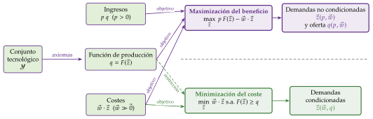
Fuente: elaboración propia a partir de Mas-Colell, Whinston y Green (1995, cap. 5).
Recorremos el esquema parte por parte:
Conjunto tecnológico: el conjunto de posibilidades de producción \(\mathcal{Y}\), que reúne los planes de producción que permite la tecnología. Se le exigen los axiomas de no vacío, cerrado, eliminación gratuita, imposibilidad de producción gratuita y posibilidad de inacción, y, para que la función de producción sea de buen comportamiento, convexidad [ver tema 3.A.11].
Función de producción: con un solo producto, la frontera de \(\mathcal{Y}\) es la función de producción \(q=F(\vec{z})\), con \(\vec{z}=(z_L,z_K)\), y para cada \(q\) el conjunto de requerimientos de factores \(V(q)=\{\vec{z}\geq\vec{0}:\ F(\vec{z})\geq q\}\) tiene por frontera la isocuanta (Varian, 1992, cap. 1). Sus propiedades:
recoge solo las combinaciones técnicamente eficientes y es cardinal;
pasa por el origen, \(F(\vec{0})=0\), por la imposibilidad de producción gratuita y la posibilidad de inacción;
es no decreciente en los factores, por la eliminación gratuita;
se supone continua y dos veces diferenciable, para poder usar el cálculo diferencial;4
se supone estrictamente cuasicóncava: las isocuantas son estrictamente convexas, porque los factores son en cierto grado complementarios.5
Para el problema del beneficio hace falta, además, que \(F\) sea estrictamente cóncava (rendimientos estrictamente decrecientes a escala);6 para el del coste basta la cuasiconcavidad, y por eso la función de costes existe con cualquier tipo de rendimientos (I.2).
Precios: la empresa es precio-aceptante en los mercados de factores, con precios \(\vec{w}=(w_L,w_K)\gg\vec{0}\), y el coste de un plan es \(\vec{w}\cdot\vec{z}\). En el problema del beneficio, también lo es en el del producto, a un precio \(p>0\), y sus ingresos son \(p\,q\).
Los supuestos son también comunes: contexto estático, información perfecta, producto homogéneo, una sola planta y un solo producto, y largo plazo: todos los factores son variables. Lo único que cambia es el papel de cada ingrediente (tabla 1).
| Maximización del beneficio | Minimización del coste | |
|---|---|---|
| Función objetivo | beneficio \(p\,F(\vec{z})-\vec{w}\cdot\vec{z}\) (se maximiza) | coste \(\vec{w}\cdot\vec{z}\) (se minimiza) |
| Restricción | la tecnología, dentro de la función objetivo: \(q=F(\vec{z})\); \(\vec{z}\geq\vec{0}\) | de producción: \(F(\vec{z})\geq q\) |
| Parámetros | precios del producto \(p\) y de los factores \(\vec{w}\) | precios de los factores \(\vec{w}\) y producción \(q\) |
| Mercado del producto | precio-aceptante | cualquier estructura (no aparece \(p\)) |
| Solución | demandas no condicionadas \(\vec{z}(p,\vec{w})\) y oferta \(q(p,\vec{w})\) | demandas condicionadas \(\vec{z}(\vec{w},q)\) |
| Función valor | función de beneficio \(B(p,\vec{w})\) | función de costes \(C(\vec{w},q)\) |
Fuente: elaboración propia basada en Mas-Colell, Whinston y Green (1995, cap. 5) y Maté García y Pérez Domínguez (2007, cap. 7).
A diferencia del consumidor [ver tema 3.A.9], los dos problemas no son un primal y su dual en sentido estricto: el del beneficio contiene más información (los ingresos). En sentido estricto, el dual de minimizar el coste de un nivel de producción es maximizar la producción con un coste dado, el par que replica exactamente la dualidad del consumidor (Segura, 1996); es correcto, pero poco habitual, y se resume en el anexo D. En la teoría de la empresa es más habitual, y más útil, la «dualidad» en sentido amplio entre maximizar el beneficio y minimizar el coste. Es la que seguimos.
I.2. Problemas primal y dual
Con los ingredientes ya definidos, planteamos primero la maximización del beneficio y después la minimización del coste.
I.2.1. Problema de maximización del beneficio en una etapa
a) Idea
El objetivo último de la empresa es el beneficio, \(B\equiv\) ingresos \(-\) costes. Empezamos por él porque contiene toda la información (ingresos y costes), aunque sea el caso menos general: solo vale para la empresa precio-aceptante en todos sus mercados, el del producto y los de los factores. Al pasar después a la minimización del coste se pierde información (los ingresos), que depende de la estructura del mercado del producto, pero se gana generalidad. Como el título solo pide costes, este problema se presenta de forma compacta.
b) Modelo
i) Supuestos
Los ingredientes de I.1, con la empresa precio-aceptante en el mercado del producto (\(p\)) y en los de factores (\(\vec{w}\)), y \(F\) estrictamente cóncava.
ii) Desarrollo
Analítico. La empresa elige directamente los factores, en una etapa: \[\begin{array}{rl}\displaystyle \max_{\vec{z}} & \displaystyle p\,F(\vec{z})-\vec{w}\cdot\vec{z} \\ \text{s.a.} & \vec{z}\geq\vec{0}.\end{array} \tag{1}\]
Condiciones de primer orden: como hay restricciones de no negatividad, se resuelve por el método de Kuhn-Tucker: \(p\,F_i(\vec{z}^*)-w_i\leq 0\), \(z_i^*\geq 0\) y \(z_i^*\big(p\,F_i(\vec{z}^*)-w_i\big)=0\) para cada factor (anexo A). En una solución interior, \[p\,\mathrm{PMg}_i=w_i\quad\forall i\qquad\Longrightarrow\qquad \mathrm{RMST}_{LK}=\frac{\mathrm{PMg}_L}{\mathrm{PMg}_K}=\frac{w_L}{w_K}. \tag{2}\] Cada factor se contrata hasta que el valor de su producto marginal iguala su precio, y la relación marginal de sustitución técnica, la cantidad de un factor a la que puede renunciarse por una unidad más del otro sin cambiar la producción, iguala el precio relativo de los factores. En el óptimo, a la empresa le da igual contratar una unidad más de capital o de trabajo, porque la productividad marginal por euro gastado es la misma.
Condiciones de segundo orden: la matriz hessiana del beneficio respecto a \(\vec{z}\) es \(p\,D^2F(\vec{z}^*)=\big(p\,F_{ij}\big)\), que debe ser semidefinida negativa en el óptimo. Como \(p>0\), depende solo de \(D^2F\): con \(F\) cóncava las condiciones de primer orden son suficientes, y con \(F\) estrictamente cóncava la solución es única (anexo C).
Por qué se exige concavidad: si hubiera rendimientos crecientes a escala y un plan con beneficio positivo, ampliarlo proporcionalmente multiplicaría el beneficio y el problema no tendría solución; con rendimientos constantes, el beneficio máximo es nulo y la escala queda indeterminada (Mas-Colell, Whinston y Green, 1995, § 5.C). La maximización del beneficio de una empresa precio-aceptante exige, por tanto, rendimientos decrecientes, al menos a partir de cierta escala.
Gráfico, con un solo factor (gráfico 2).
Interpretación gráfica con un solo factor. Con \(q=F(z)\) y \(F''<0\), las rectas de isobeneficio \(B^0=p\,q-w\,z\), es decir, \(q=B^0/p+(w/p)\,z\), tienen pendiente \(w/p\) y cortan el eje vertical en \(B^0/p\): cuanto más arriba, más beneficio. El óptimo \(E\) está en la isobeneficio más alta que toca la función de producción, donde \(F'(z^*)=w/p\). El punto \(E\) determina:
la demanda del factor \(z(p,w)\);
la oferta \(q(p,w)=F\big(z(p,w)\big)\);
el beneficio máximo \(B(p,w)\), que se lee en la ordenada en el origen de esa isobeneficio, \(B(p,w)/p\).
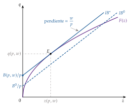
Fuente: elaboración propia a partir de Pérez Domínguez (2004, 23).
iii) Implicaciones: demandas no condicionadas, oferta y función de beneficio
La solución da las demandas no condicionadas de factores y la función de oferta: \[\vec{z}^*=\vec{z}(p,\vec{w})=\begin{pmatrix} z_1(p,w_1,\dots,w_n)\\ \vdots\\ z_n(p,w_1,\dots,w_n)\end{pmatrix},\qquad q(p,\vec{w})=F\big(\vec{z}(p,\vec{w})\big). \tag{3}\] Sus propiedades (Mas-Colell, Whinston y Green, 1995, prop. 5.C.1; Pérez Domínguez, 2004, 26):
existen y son únicas, con \(F\) estrictamente cóncava;
son continuas en \((p,\vec{w})\), por el teorema del máximo de Berge, y, con cierta generalidad, diferenciables (teorema de la función implícita);
son homogéneas de grado cero en \((p,\vec{w})\): \(\vec{z}(\kappa p,\kappa\vec{w})=\vec{z}(p,\vec{w})\) y \(q(\kappa p,\kappa\vec{w})=q(p,\vec{w})\) para todo \(\kappa>0\). Si todos los precios se multiplican por la misma constante, el plan óptimo no cambia.
Sustituyéndolas en el objetivo se obtiene la función valor del problema, la función de beneficio:
\[B(p,\vec{w})=p\,q(p,\vec{w})-\vec{w}\cdot\vec{z}(p,\vec{w})=\begin{array}{rl}\displaystyle \max_{\vec{z}} & \displaystyle p\,F(\vec{z})-\vec{w}\cdot\vec{z} \\ \text{s.a.} & \vec{z}\geq\vec{0}\end{array}\tag{4}\]
Sus propiedades (Mas-Colell, Whinston y Green, 1995, prop. 5.C.1; Pérez Domínguez, 2004, 24):
es continua en \((p,\vec{w})\);
es homogénea de grado uno en \((p,\vec{w})\): \(B(\kappa p,\kappa\vec{w})=\kappa\,B(p,\vec{w})\);
es no decreciente en \(p\) (estrictamente creciente si \(q(p,\vec{w})>0\)) y no creciente en cada \(w_i\);
es convexa en \((p,\vec{w})\): si la empresa mantuviera el plan inicial, su beneficio variaría linealmente con los precios; como puede reoptimizar, gana al menos eso;
cumple el lema de Hotelling (Hotelling, 1932): si \(B\) es diferenciable, \[\frac{\partial B(p,\vec{w})}{\partial p}=q(p,\vec{w}),\qquad \frac{\partial B(p,\vec{w})}{\partial w_i}=-z_i(p,\vec{w}). \tag{5}\] La oferta y las demandas no condicionadas se obtienen derivando la función de beneficio. Es el análogo en la empresa de la identidad de Roy (demostración en el anexo B);
las dos propiedades anteriores dan las propiedades de la matriz de segundas derivadas de la función de beneficio, \(D^2B(p,\vec{w})\): su matriz hessiana respecto a todos los precios, que por el lema de Hotelling reúne las derivadas de la oferta y, con signo menos, las de las demandas no condicionadas: \[D^2B(p,\vec{w})\equiv\begin{pmatrix} \dfrac{\partial^2B}{\partial p^2} & \dfrac{\partial^2B}{\partial p\,\partial w_1} & \cdots & \dfrac{\partial^2B}{\partial p\,\partial w_n}\\[8pt] \dfrac{\partial^2B}{\partial w_1\,\partial p} & \dfrac{\partial^2B}{\partial w_1^2} & \cdots & \dfrac{\partial^2B}{\partial w_1\,\partial w_n}\\ \vdots & \vdots & \ddots & \vdots\\ \dfrac{\partial^2B}{\partial w_n\,\partial p} & \dfrac{\partial^2B}{\partial w_n\,\partial w_1} & \cdots & \dfrac{\partial^2B}{\partial w_n^2} \end{pmatrix} \underset{\substack{\text{lema de}\\ \text{Hotelling}}}{=} \begin{pmatrix} \dfrac{\partial q}{\partial p} & \dfrac{\partial q}{\partial w_1} & \cdots & \dfrac{\partial q}{\partial w_n}\\[8pt] -\dfrac{\partial z_1}{\partial p} & -\dfrac{\partial z_1}{\partial w_1} & \cdots & -\dfrac{\partial z_1}{\partial w_n}\\ \vdots & \vdots & \ddots & \vdots\\ -\dfrac{\partial z_n}{\partial p} & -\dfrac{\partial z_n}{\partial w_1} & \cdots & -\dfrac{\partial z_n}{\partial w_n} \end{pmatrix}, \tag{6}\] con \(q=q(p,\vec{w})\) y \(z_i=z_i(p,\vec{w})\). Es:
simétrica: el orden de derivación no importa (teorema de Schwarz o de Young). Tiene dos implicaciones:
\(\dfrac{\partial^2B}{\partial w_i\,\partial w_j}=\dfrac{\partial^2B}{\partial w_j\,\partial w_i}\iff\dfrac{\partial z_i(p,\vec{w})}{\partial w_j}=\dfrac{\partial z_j(p,\vec{w})}{\partial w_i}\): los efectos cruzados de los precios de los factores sobre sus demandas son simétricos;
\(\dfrac{\partial^2B}{\partial w_i\,\partial p}=\dfrac{\partial^2B}{\partial p\,\partial w_i}\iff-\dfrac{\partial z_i(p,\vec{w})}{\partial p}=\dfrac{\partial q(p,\vec{w})}{\partial w_i}\): el efecto del precio de un factor sobre la oferta es igual, y de signo contrario, al del precio del producto sobre la demanda de ese factor;
semidefinida positiva, por la convexidad de \(B\), de modo que los elementos de su diagonal principal son no negativos: \[\frac{\partial q(p,\vec{w})}{\partial p}\geq 0,\qquad -\frac{\partial z_i(p,\vec{w})}{\partial w_i}\geq 0\iff\frac{\partial z_i(p,\vec{w})}{\partial w_i}\leq 0. \tag{7}\]
la oferta nunca tiene pendiente negativa (ley de la oferta);
las demandas no condicionadas nunca crecen con su propio precio: como la empresa no tiene restricción presupuestaria, no hay efecto renta y no existen factores Giffen, a diferencia de los bienes del consumidor [ver tema 3.A.8]. Estas demandas son la base de la demanda derivada de trabajo [ver tema 3.A.25].
c) Valoración
El problema del beneficio da en un paso la oferta, las demandas de factores y sus propiedades, pero solo para la empresa precio-aceptante y con rendimientos decrecientes. Para estudiar los costes de cualquier empresa, sea cual sea su mercado, conviene aislar la parte del problema que no depende de los ingresos: la minimización del coste.
I.2.2. Problema dual: minimización del coste
a) Idea
Fijada la producción \(q\), ¿cuál es la combinación de factores más barata para obtenerla? Es el problema central de la teoría de los costes: no depende de los ingresos y, por tanto, vale para la empresa competitiva, para el monopolista o para el oligopolista, siempre que sean precio-aceptantes en los mercados de factores. Su función valor, la función de costes, y la relación de esta con la tecnología las desarrolla Shephard (1953).
b) Modelo
i) Supuestos
Los ingredientes de I.1: tecnología con \(F\) estrictamente cuasicóncava (no hace falta concavidad) y precio-aceptación en los mercados de factores. La estructura del mercado del producto es irrelevante, porque el precio del producto no aparece en el problema.
ii) Desarrollo
Analítico. El problema de minimización del coste es \[\begin{array}{rl}\displaystyle \min_{\vec{z}} & \displaystyle \vec{w}\cdot\vec{z} \\ \text{s.a.} & F(\vec{z})\geq q \\ & \vec{z}\geq\vec{0},\end{array} \tag{8}\] con \(q>0\) y \(\vec{w}\gg\vec{0}\). Existe solución: aunque \(V(q)\) no está acotado, basta buscarla entre las combinaciones que no cuestan más que una cualquiera que produzca \(q\), que forman un conjunto compacto.
Lagrangiana: se resuelve con el método de Kuhn-Tucker, a partir de \[\mathcal{L}=\vec{w}\cdot\vec{z}+\mu\big(q-F(\vec{z})\big). \tag{9}\]
Condiciones de primer orden: \(w_i-\mu F_i(\vec{z}^*)\geq 0\), \(z_i^*\geq 0\) y \(z_i^*\big(w_i-\mu F_i(\vec{z}^*)\big)=0\) para cada factor, y \(F(\vec{z}^*)=q\): la restricción se satura, porque si sobrara producción podría usarse algo menos de un factor y ahorrar. En una solución interior, \[\frac{w_L}{\mathrm{PMg}_L}=\frac{w_K}{\mathrm{PMg}_K}=\mu,\qquad \mathrm{RMST}_{LK}=\frac{\mathrm{PMg}_L}{\mathrm{PMg}_K}=\frac{w_L}{w_K}. \tag{10}\] El coste de obtener una unidad más de producto con cualquier factor (\(w_i/\mathrm{PMg}_i\), el precio del factor dividido por su productividad marginal) es el mismo, y la RMST iguala el precio relativo de los factores, la misma condición de tangencia que en la maximización del beneficio.
Multiplicador: \(\mu\) es el precio sombra de la producción exigida: lo que aumenta el coste mínimo cuando se exige producir marginalmente más. Por el teorema de la envolvente, \(\mu^*=\partial C(\vec{w},q)/\partial q\): es el coste marginal. Es el análogo del multiplicador del problema dual del consumidor, el coste marginal de la utilidad [ver tema 3.A.9].
Condiciones de segundo orden: con dos factores, el hessiano orlado de \(F\), \[\overline{H}=\begin{pmatrix}0&F_L&F_K\\F_L&F_{LL}&F_{LK}\\F_K&F_{KL}&F_{KK}\end{pmatrix},\] debe cumplir \(|\overline{H}|>0\) en el óptimo, lo que equivale a isocuantas estrictamente convexas en ese punto; con \(F\) estrictamente cuasicóncava se cumple y la solución es única. Es la misma condición que en el problema del consumidor (anexo A).
Gráfico (gráfico 3): se dibuja la isocuanta del nivel exigido, \(q\), que queda fija, y las rectas isocoste \(w_Lz_L+w_Kz_K=\overline{C}\), paralelas entre sí, de pendiente \(-w_L/w_K\), que unen las combinaciones con el mismo coste. Se desplazan hacia el origen hasta la más baja que toca la isocuanta. El óptimo \(\vec{z}^*\) está en la tangencia: la pendiente de la isocuanta (la RMST) iguala la de la isocoste (el precio relativo). En puntos como \(\vec{z}'\) o \(\vec{z}''\), de la misma isocuanta, se produce lo mismo con un coste mayor.
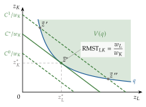
Fuente: elaboración propia basada en Maté García y Pérez Domínguez (2007, cap. 7) y Mas-Colell, Whinston y Green (1995, § 5.C).
iii) Implicaciones: demandas condicionadas y función de costes
La solución da las demandas condicionadas de factores, condicionadas a producir \(q\): \[\vec{z}^*=\vec{z}(\vec{w},q)=\begin{pmatrix} z_1(w_1,\dots,w_n,q)\\ \vdots\\ z_n(w_1,\dots,w_n,q)\end{pmatrix}. \tag{11}\] Son las análogas de las demandas hicksianas del consumidor, no de las marshallianas [ver tema 3.A.9]: el parámetro es la producción, como allí la utilidad. Las demandas condicionadas y las no condicionadas se distinguen por sus argumentos, que se escriben siempre. Sus propiedades (Mas-Colell, Whinston y Green, 1995, prop. 5.C.2; Pérez Domínguez, 2004, 15):
existen y son únicas, con \(F\) estrictamente cuasicóncava;
son continuas en \((\vec{w},q)\) y, con cierta generalidad, diferenciables;
son homogéneas de grado cero en \(\vec{w}\): \(\vec{z}(\kappa\vec{w},q)=\vec{z}(\vec{w},q)\) para todo \(\kappa>0\). Si todos los precios de los factores se multiplican por \(\kappa\), la combinación más barata no cambia. No lo son en \(q\): para producir el doble hacen falta más factores;
no hay exceso de producción: \(F\big(\vec{z}(\vec{w},q)\big)=q\);
cumplen la ley de la demanda condicionada: \((\vec{w}'-\vec{w})\cdot\big(\vec{z}(\vec{w}',q)-\vec{z}(\vec{w},q)\big)\leq 0\) y, en particular, \(\partial z_i(\vec{w},q)/\partial w_i\leq 0\). Se debe a la concavidad de la función de costes, como veremos enseguida.
Sustituyéndolas en la función objetivo se obtiene la función valor del problema, la función de costes: el coste mínimo de producir \(q\) a los precios \(\vec{w}\),
\[C(\vec{w},q)=\vec{w}\cdot\vec{z}(\vec{w},q)=\begin{array}{rl}\displaystyle \min_{\vec{z}} & \displaystyle \vec{w}\cdot\vec{z} \\ \text{s.a.} & F(\vec{z})\geq q \\ & \vec{z}\geq\vec{0}\end{array}\tag{12}\]
Es el concepto central de la exposición: supone eficiencia técnica (se produce sobre \(F\)) y económica (con la combinación más barata). Sus propiedades (Mas-Colell, Whinston y Green, 1995, prop. 5.C.2):
es continua en \((\vec{w},q)\), y \(C(\vec{w},0)=0\) a largo plazo, por la posibilidad de inacción;
es homogénea de grado uno en \(\vec{w}\): \(C(\kappa\vec{w},q)=\kappa\,C(\vec{w},q)\). Si todos los precios de los factores se multiplican por \(\kappa>0\), la combinación óptima no cambia y su coste se multiplica por \(\kappa\);
es estrictamente creciente en \(q\): producir más siempre cuesta más;
es no decreciente en cada \(w_i\): el encarecimiento de un factor nunca abarata la producción (la deja igual si el factor no se usa);
es cóncava en \(\vec{w}\). Si los precios pasan de \(\vec{w}\) a \(\vec{w}'\) y la empresa se comportara de forma «pasiva», manteniendo la combinación inicial \(\vec{z}(\vec{w},q)\), su coste variaría linealmente con los precios, \(\vec{w}'\cdot\vec{z}(\vec{w},q)\). Como puede sustituir el factor que se encarece por el que se abarata, gasta como mucho eso: \[C(\vec{w}',q)\leq\vec{w}'\cdot\vec{z}(\vec{w},q)=C(\vec{w},q)+\vec{z}(\vec{w},q)\cdot(\vec{w}'-\vec{w}). \tag{13}\] La función de costes queda siempre por debajo de su plano tangente, y eso es la concavidad (gráfico 4). No significa que el coste suba menos que proporcionalmente cuando suben todos los precios en la misma proporción (entonces sube exactamente en esa proporción, por la propiedad 2), sino que, cuando cambian los precios relativos, la sustitución abarata la combinación respecto a la inicial;7
cumple el lema de Shephard (Shephard, 1953): si \(C\) es diferenciable en \(\vec{w}\),
\[z_i(\vec{w},q)=\frac{\partial C(\vec{w},q)}{\partial w_i},\qquad i=1,\dots,n.\tag{14}\]
Las demandas condicionadas se obtienen derivando la función de costes. Intuición: si \(w_i\) sube un euro, la combinación óptima apenas cambia en primer orden (teorema de la envolvente) y el coste sube \(z_i\) euros. La demostración está en el anexo B;
las dos propiedades anteriores dan la matriz de sustitución de factores, \(S(\vec{w},q)\): la matriz hessiana de \(C(\vec{w},q)\) respecto a los precios de los factores, es decir, de segundas derivadas de la función de costes y, por el lema de Shephard, de primeras derivadas de las demandas condicionadas: \[S(\vec{w},q)\equiv\begin{pmatrix} S_{11} & \cdots & S_{1n}\\ \vdots & \ddots & \vdots\\ S_{n1} & \cdots & S_{nn}\end{pmatrix},\quad\text{donde}\quad \left\{\begin{array}{l} S_{ij}\equiv\dfrac{\partial^2C(\vec{w},q)}{\partial w_i\,\partial w_j}\ \underset{\substack{\text{lema de}\\ \text{Shephard}}}{=}\ \dfrac{\partial z_i(\vec{w},q)}{\partial w_j}\\[12pt] \forall\, i,j=1,\dots,n. \end{array}\right. \tag{15}\] La matriz de sustitución es:
simétrica, \(S_{ij}=S_{ji}\), porque el orden de derivación no importa (teorema de Schwarz o de Young): el efecto del precio de un factor sobre la demanda condicionada de otro es igual al efecto recíproco;
semidefinida negativa, porque \(C\) es cóncava en \(\vec{w}\): los elementos de su diagonal principal son no positivos,8 \(S_{ii}=\partial z_i(\vec{w},q)/\partial w_i\leq 0\). Si sube el precio de un factor, su demanda condicionada disminuye o se mantiene, pero nunca aumenta: es la ley de la demanda condicionada;
tal que \(S(\vec{w},q)\,\vec{w}=\vec{0}\), por la homogeneidad de grado cero de \(\vec{z}(\vec{w},q)\) en \(\vec{w}\) (teorema de Euler). Con dos factores, la consecuencia es que son necesariamente sustitutivos netos: \(\partial z_L(\vec{w},q)/\partial w_K\geq 0\).
Las demostraciones son las mismas que las de la función de gasto y la matriz de Slutsky [ver tema 3.A.9].
Ejemplos [ver tema 3.A.11]:
con Leontief, \(q=\min\{z_K/a;\,z_L/b\}\), la empresa usa siempre las proporciones fijas y \(C(\vec{w},q)=(a\,w_K+b\,w_L)\,q\);
con Cobb-Douglas, \(q=A\,z_K^{\alpha}z_L^{\beta}\) y \(k\equiv\alpha+\beta\) el grado de homogeneidad, \[C(\vec{w},q)=k\left(\frac{q}{A}\right)^{1/k}\left(\frac{w_K}{\alpha}\right)^{\alpha/k}\left(\frac{w_L}{\beta}\right)^{\beta/k}, \tag{16}\] y por Shephard \(w_Kz_K(\vec{w},q)/C(\vec{w},q)=\alpha/k\): la participación de cada factor en el coste es constante;
si \(F\) es homotética, la función de costes es separable, \(C(\vec{w},q)=\phi(q)\,c(\vec{w})\), con \(c(\vec{w})\) el coste de una unidad; si es homogénea de grado \(k\), \(C(\vec{w},q)=q^{1/k}c(\vec{w})\) (Varian, 1992, cap. 5).
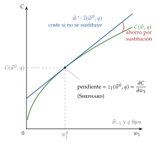
Fuente: elaboración propia basada en Mas-Colell, Whinston y Green (1995, § 5.C).
Las propiedades de los dos problemas forman pares (tabla 2): cada propiedad de la función de beneficio tiene su correspondiente en la función de costes.
| Maximización del beneficio: \(B(p,\vec{w})\) | Minimización del coste: \(C(\vec{w},q)\) |
|---|---|
| \(\vec{z}(p,\vec{w})\) y \(q(p,\vec{w})\) homogéneas de grado 0 en \((p,\vec{w})\) | \(\vec{z}(\vec{w},q)\) homogénea de grado 0 en \(\vec{w}\) |
| \(B\) homogénea de grado 1 en \((p,\vec{w})\) | \(C\) homogénea de grado 1 en \(\vec{w}\) |
| \(B\) no decreciente en \(p\) y no creciente en \(\vec{w}\) | \(C\) estrictamente creciente en \(q\) y no decreciente en \(\vec{w}\) |
| \(B\) convexa en \((p,\vec{w})\) | \(C\) cóncava en \(\vec{w}\) |
| Lema de Hotelling: \(q(p,\vec{w})=\dfrac{\partial B}{\partial p}\), \(z_i(p,\vec{w})=-\dfrac{\partial B}{\partial w_i}\) | Lema de Shephard: \(z_i(\vec{w},q)=\dfrac{\partial C}{\partial w_i}\) |
| \(D^2B(p,\vec{w})\) simétrica y semidefinida positiva: \(\partial q/\partial p\geq 0\) (ley de la oferta) y \(\partial z_i(p,\vec{w})/\partial w_i\leq 0\) | \(S(\vec{w},q)=D^2_{\vec{w}}C\) simétrica y semidefinida negativa, con \(S\,\vec{w}=\vec{0}\): \(\partial z_i(\vec{w},q)/\partial w_i\leq 0\) |
Fuente: elaboración propia basada en Mas-Colell, Whinston y Green (1995, prop. 5.C.1 y 5.C.2).
c) Valoración
La minimización del coste tiene la misma condición de tangencia que la maximización del beneficio y produce dos funciones nuevas: las demandas condicionadas, que cumplen siempre la ley de la demanda, y la función de costes, de la que se obtienen derivando. Sirve para cualquier empresa que compre los factores a precios dados. Falta ver cómo se relaciona con el problema del beneficio y con la tecnología.
I.3. «Dualidad» entre los problemas de maximización de beneficio y minimización de coste
Resueltos los dos problemas por separado, pasamos a ver cómo se relacionan. Como en la teoría del consumidor [ver tema 3.A.9], entre ellos se dan unas relaciones que permiten obtener cualquier función de comportamiento de la empresa a partir de otra, sin volver a resolver ningún problema.
La clave es que la maximización del beneficio puede resolverse en dos etapas: primero se minimiza el coste de cada nivel de producción, lo que da \(C(\vec{w},q)\), y después se elige el nivel que maximiza el beneficio: \[B(p,\vec{w})=\begin{array}{rl}\displaystyle \max_{q} & \displaystyle p\,q-C(\vec{w},q) \\ \text{s.a.} & q\geq 0.\end{array} \tag{17}\]
Con solución interior, la condición de primer orden es \(p=\partial C(\vec{w},q)/\partial q=\mathrm{CMg}\),9 y la de segundo orden, \(\partial^2C(\vec{w},q)/\partial q^2\geq 0\): la empresa produce en el tramo creciente del coste marginal. Además, solo produce si el precio cubre el coste medio que puede evitar; si no, prefiere la inacción.
La oferta de la empresa precio-aceptante es, por tanto, la inversa del tramo creciente del coste marginal por encima del mínimo del coste medio que puede evitar (el CVMe a corto plazo y el CMe a largo, I.3): la teoría de los costes, sin mirar los ingresos, ya contiene la oferta competitiva [ver tema 3.A.16]. Los casos según la forma de los costes están en el anexo F.
De ahí salen las relaciones de «dualidad» entre los dos problemas (Mas-Colell, Whinston y Green, 1995, § 5.C; Maté García y Pérez Domínguez, 2007, cap. 7): \[\vec{z}(p,\vec{w})\equiv\vec{z}\big(\vec{w},q(p,\vec{w})\big),\qquad p=\frac{\partial C\big(\vec{w},q(p,\vec{w})\big)}{\partial q}, \tag{18}\] \[B(p,\vec{w})\equiv p\,q(p,\vec{w})-C\big(\vec{w},q(p,\vec{w})\big). \tag{19}\]
Entre demandas: la demanda no condicionada es la condicionada evaluada en la producción que maximiza el beneficio. Por eso, como en el consumidor, sus derivadas se relacionan con una ecuación de tipo Slutsky (apartado II.1.2).
Entre funciones valor: la función de beneficio se obtiene de la de costes maximizando en \(q\), sin volver a resolver la minimización. Y los lemas son coherentes: por el teorema de la envolvente, \(\partial B/\partial w_i=-\partial C/\partial w_i\), es decir, \(-z_i(p,\vec{w})=-z_i\big(\vec{w},q(p,\vec{w})\big)\).
Gráficamente (gráfico 5), se unen los dos problemas: en el panel de la derecha, la empresa elige la producción donde el precio iguala al coste marginal; en el de la izquierda, la isocuanta de esa producción y la isocoste tangente dan la combinación de factores, que es a la vez la que maximiza el beneficio y la de mínimo coste para esa producción.
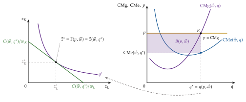
Fuente: elaboración propia basada en Mas-Colell, Whinston y Green (1995, § 5.C y 5.D).
Asimetría: la relación no es simétrica. La función de costes existe con cualquier tipo de rendimientos, mientras que la de beneficio solo está bien definida si los rendimientos son decrecientes: con rendimientos constantes o crecientes, el beneficio máximo es nulo o no está acotado. Por eso la función de costes es el instrumento más general.
Ejemplo. Con \(F\) homogénea de grado \(k<1\), \(C(\vec{w},q)=q^{1/k}c(\vec{w})\). La condición \(p=\mathrm{CMg}=\tfrac{1}{k}\,q^{(1-k)/k}c(\vec{w})\) da la oferta \(q(p,\vec{w})=\big(k\,p/c(\vec{w})\big)^{k/(1-k)}\) y, como \(C=k\,p\,q\) en el óptimo, la función de beneficio es \(B(p,\vec{w})=(1-k)\,p\,q(p,\vec{w})\). Puede comprobarse que \(\partial B/\partial p=q(p,\vec{w})\), como dice el lema de Hotelling. En la Cobb-Douglas, \(c(\vec{w})\) es la ecuación (16) con \(q=1\).
Esquema: todas estas relaciones se resumen en el gráfico 6:
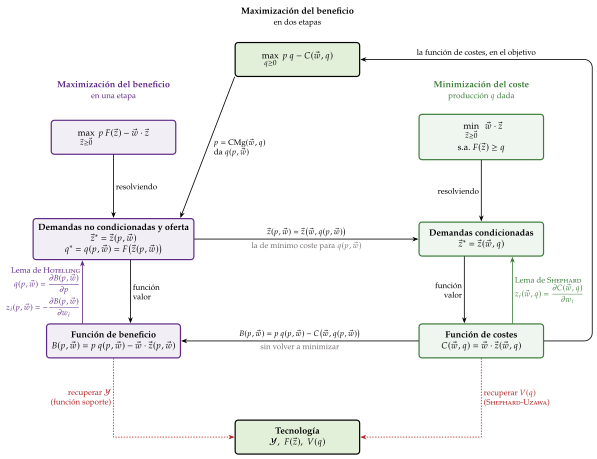
Fuente: elaboración propia a partir de Maté García y Pérez Domínguez (2007, cap. 7) y Mas-Colell, Whinston y Green (1995, § 5.C).
I.3.1. Dualidad entre la función de costes y la función de producción
Una aplicación muy útil de la teoría de la dualidad es que garantiza que la función de costes contiene esencialmente la misma información que la tecnología: dada \(C(\vec{w},q)\), puede recuperarse el conjunto de requerimientos de factores (Shephard, 1953; McFadden, 1978) \[V^*(q)=\big\{\vec{z}\geq\vec{0}:\ \vec{w}\cdot\vec{z}\geq C(\vec{w},q)\ \ \text{para todo }\vec{w}\gg\vec{0}\big\}, \tag{20}\] y con él la función de producción, \(F(\vec{z})=\max\{q:\ \vec{z}\in V^*(q)\}\).
Intuición: cada vector de precios \(\vec{w}\) define un semiplano, el de las combinaciones que cuestan al menos el mínimo \(C(\vec{w},q)\). La tecnología está dentro de todos ellos, y su intersección es la envolvente de las isocostes tangentes a la isocuanta (gráfico 7).
Recuperación exacta: si \(V(q)\) es convexo y cumple la eliminación gratuita, \(V^*(q)=V(q)\): la tecnología se recupera exactamente. Si no lo es, se recupera su envoltura convexa, que es la que importa para la conducta, porque una empresa que minimiza costes nunca elige un punto de un tramo no convexo de la isocuanta (Mas-Colell, Whinston y Green, 1995, § 5.C).
¿Qué funciones pueden ser funciones de costes? Toda función \(C(\vec{w},q)\) continua, no decreciente, homogénea de grado uno y cóncava en \(\vec{w}\), y creciente en \(q\), es la función de costes de alguna tecnología (Shephard, 1953; Uzawa, 1964).
Es la base de las aplicaciones empíricas (apartados II.3 a II.5): basta especificar una función de costes con esas propiedades y estimarla, o estimar las demandas que da el lema de Shephard, sin escribir nunca la función de producción (Diewert, 1971, 1974).
Un procedimiento equivalente al de la integrabilidad de la demanda [ver tema 3.A.9]. En el consumidor, si un sistema de demandas marshallianas cumple la ley de Walras y su matriz de Slutsky es simétrica y semidefinida negativa, existe una función de utilidad de buen comportamiento de la que podrían haberse obtenido maximizando. En la empresa, si un sistema de demandas de factores es homogéneo de grado cero en \(\vec{w}\) y su matriz de sustitución \(S(\vec{w},q)\) es simétrica y semidefinida negativa, existe una tecnología de la que proceden minimizando el coste, y puede recuperarse con (20).
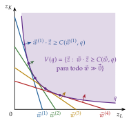
Fuente: elaboración propia a partir de Mas-Colell, Whinston y Green (1995, § 5.C) y Varian (1992, cap. 6).
I.3.2. Dualidad entre la función de beneficio y la de producción
La tecnología también se describe con el conjunto de posibilidades de producción \(\mathcal{Y}\), cuyos planes son vectores de producción neta \(\vec{y}=(q,-\vec{z})\): el producto con signo positivo y los factores con signo negativo [ver tema 3.A.11]. Con un producto, \(\mathcal{Y}=\{(q,-\vec{z}):\ \vec{z}\geq\vec{0},\ q\leq F(\vec{z})\}\), y el beneficio de un plan es \(p\,q-\vec{w}\cdot\vec{z}\). La función de beneficio es \[B(p,\vec{w})=\begin{array}{rl}\displaystyle \max_{q,\,\vec{z}} & \displaystyle p\,q-\vec{w}\cdot\vec{z} \\ \text{s.a.} & (q,-\vec{z})\in\mathcal{Y}.\end{array} \tag{21}\] Geométricamente, para cada vector de precios indica hasta dónde puede desplazarse la recta (el hiperplano) de isobeneficio sin salir de \(\mathcal{Y}\): es la función soporte del conjunto de posibilidades de producción (gráfico 8).
Por eso puede recorrerse el camino inverso: la tecnología queda dentro de todos los semiespacios limitados por las isobeneficio máximas, \[\mathcal{Y}^*=\big\{(q,-\vec{z}):\ p\,q-\vec{w}\cdot\vec{z}\leq B(p,\vec{w})\ \ \text{para todo }(p,\vec{w})\gg\vec{0}\big\}, \tag{22}\] y si \(\mathcal{Y}\) es convexo y cerrado y cumple la eliminación gratuita, \(\mathcal{Y}^*=\mathcal{Y}\) (Mas-Colell, Whinston y Green, 1995, § 5.C). Toda función \(B\) continua, homogénea de grado uno y convexa en \((p,\vec{w})\) es la función de beneficio de alguna tecnología convexa.
Las dos dualidades dicen lo mismo con instrumentos distintos: tecnología, costes y beneficio son tres descripciones equivalentes de la empresa cuando la tecnología es convexa. La de costes es más general (no necesita rendimientos decrecientes ni precio-aceptación en el mercado del producto), y por eso es la que se estima.
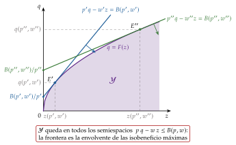
Fuente: elaboración propia a partir de Mas-Colell, Whinston y Green (1995, § 5.C).
Minimizar el coste de cada producción y elegir después la producción con \(p=\mathrm{CMg}\) es lo mismo que maximizar el beneficio. La función de costes es cóncava y homogénea de grado uno en los precios de los factores, sus derivadas son las demandas condicionadas (Shephard) y contiene la misma información que la tecnología: basta conocer los costes para conocer la empresa.
Recapitulación: basta resolver uno de los problemas para obtener todas las funciones de la empresa; la de costes, que no depende del mercado del producto, es la más general, y de ella se recupera la tecnología. Con la función de costes ya obtenida, el bloque siguiente estudia cómo cambia con la producción, con los precios de los factores y con el plazo, y cómo se estima con datos.
II. Análisis de los costes: estática comparativa, plazos y aplicaciones empíricas
En el cante: los cambios en \(q\) (senda de expansión, curva de costes, \(\varepsilon_{C,q}\) y economías de escala, con su relación con los rendimientos a escala, 2′30″) y en \(\vec{w}\) (demanda condicionada decreciente, efecto sustitución y efecto escala de palabra, sin factores Giffen, 1′30″); el corto plazo con la tabla de fases, la envolvente con su gráfico y el principio de Le Chatelier-Samuelson (4′30″); y las aplicaciones empíricas (5′30″): la idea (la dualidad hace estimable la teoría) y la translog de costes con sus ecuaciones de participación (2′), dos resultados sobre economías de escala, Christensen y Greene y la densidad frente a la escala (1′30″), y la frontera de eficiencia de Farrell, con su gráfico y la comparación entre frontera estocástica y análisis envolvente de datos (2′). La curva de Engel del factor, la demanda del factor en función de su precio, las elasticidades una a una y la derivación de la ecuación de Slutsky de los factores (anexo E) son de profundización, como las tablas de estimaciones por sectores, las series del BCE y los detalles econométricos. Las demandas condicionadas son las análogas de las hicksianas del consumidor, no de las marshallianas: conviene decirlo una vez para evitar la pregunta del tribunal.
Una vez obtenida la función de costes y sus propiedades, pasamos a analizar cómo cambia y cómo se mide. Este bloque responde a la tercera y a la cuarta preguntas. Su conclusión anticipada:
la demanda condicionada de un factor nunca crece con su precio;
a largo plazo, la forma de los costes refleja los rendimientos a escala de la tecnología y, a corto, los rendimientos del factor variable, y a largo plazo la empresa responde más que a corto;
gracias a la dualidad, basta estimar la función de costes, con datos de precios, costes y producción, para conocer la tecnología, las economías de escala y la eficiencia de cada empresa; la evidencia apoya costes medios en L más que en U y muestra diferencias de eficiencia persistentes entre empresas.
Partimos de la función de costes del bloque I, con 2 factores: \[C(\vec{w},q)=w_L\,z_L(\vec{w},q)+w_K\,z_K(\vec{w},q), \tag{23}\] y vemos cómo responden ella y las demandas condicionadas cuando cambian sus parámetros, gráfica y analíticamente: el nivel de producción \(q\) (II.1.1) y los precios \(\vec{w}\) (II.1.2). Empezamos por \(q\) porque es la base del análisis de plazos (II.2). Después veremos cómo se estima con datos (II.3 a II.5).
El análisis sigue el esquema de la estática comparativa de la demanda [ver tema 3.A.8], pero sobre las demandas condicionadas, análogas a las hicksianas [ver tema 3.A.9]: el parámetro que cambia es \(q\), no la renta, y no hay efecto renta.
II.1. Análisis de estática comparativa
II.1.1. Análisis de estática comparativa ante variaciones en el nivel de producción (\(q\))
Sobre las demandas de factores
La senda de expansión es el lugar geométrico de las combinaciones de factores de mínimo coste que se obtienen al aumentar la producción con los precios de los factores constantes (gráfico 9).
A lo largo de ella, la RMST es igual al precio relativo de los factores y, como este no cambia, la RMST permanece constante: la senda de expansión es una isoclina [ver tema 3.A.11]. Indica cómo cambian las proporciones de los factores al cambiar la producción. Es el análogo formal de la curva renta-consumo del consumidor.
Si la función de producción es homotética, la RMST depende solo de la proporción entre los factores, y la senda de expansión es un rayo desde el origen: las proporciones no cambian con la escala.10
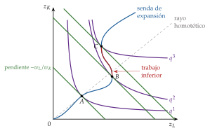
Fuente: elaboración propia a partir de Varian (1992, cap. 5).
Representando la cantidad de un factor frente a la producción se obtiene la curva de Engel del factor: pasamos del plano \((z_L,z_K)\) al plano \((q,z_L)\) (gráfico 10).
Un factor \(i\) es normal en \((\vec{w},q)\) si \(\partial z_i(\vec{w},q)/\partial q>0\): su demanda condicionada crece con la producción y su curva de Engel tiene pendiente positiva.
Es inferior si \(\partial z_i(\vec{w},q)/\partial q<0\): al producir más se usa menos de él (por ejemplo, trabajo poco cualificado cuando la empresa pasa a una técnica automatizada). La senda de expansión se vuelve entonces hacia atrás.11
Un factor puede ser normal en unos tramos e inferior en otros. Pero no todos los factores pueden ser inferiores a la vez: derivando \(F\big(\vec{z}(\vec{w},q)\big)=q\), \(\sum_iF_i\,\partial z_i(\vec{w},q)/\partial q=1>0\), así que al menos uno ha de ser normal.∎
Analíticamente, la elasticidad de la demanda condicionada respecto a la producción, \[\varepsilon_{z_i,q}\equiv\frac{\partial z_i(\vec{w},q)}{\partial q}\,\frac{q}{z_i(\vec{w},q)}, \tag{24}\] clasifica los factores en normales (\(\varepsilon_{z_i,q}>0\)) e inferiores (\(\varepsilon_{z_i,q}<0\)); con \(\varepsilon_{z_i,q}=0\), la demanda no cambia con la producción. Ponderadas por las participaciones de cada factor en el coste, \(s_i\equiv w_iz_i/C(\vec{w},q)\), suman la elasticidad del coste respecto a la producción: \(\sum_is_i\,\varepsilon_{z_i,q}=\varepsilon_{C,q}\) (anexo E).
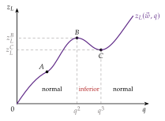
Fuente: elaboración propia a partir de Varian (1992, cap. 5).
Sobre la función de costes
Al aumentar \(q\), la isocuanta exigida se aleja del origen y el coste total aumenta; la forma que adopte depende de los rendimientos a escala de la tecnología. Con \(\vec{w}\) fijo, \(C(\vec{w},q)\) se dibuja como \(C(q)\) en dos dimensiones (gráfico 11, arriba).
El coste medio, \(\mathrm{CMe}(q)=C(\vec{w},q)/q\), es la pendiente del rayo que va del origen a la curva de costes;12 el coste marginal, \(\mathrm{CMg}(q)=\partial C(\vec{w},q)/\partial q\), el coste de producir una unidad más, es la pendiente de la tangente.13 El CMe baja mientras \(\mathrm{CMg}<\mathrm{CMe}\) y sube cuando \(\mathrm{CMg}>\mathrm{CMe}\), de modo que el CMg corta al CMe en su mínimo (gráfico 11, abajo): \[\frac{d\,\mathrm{CMe}}{dq}=\frac{\mathrm{CMg}-\mathrm{CMe}}{q}. \tag{25}\]
Hay economías de escala cuando el coste medio a largo plazo decrece con la producción, es decir, cuando los costes crecen menos que proporcionalmente; deseconomías de escala, cuando crece. Se miden con la elasticidad del coste respecto a la producción: \[\varepsilon_{C,q}\equiv\frac{\partial C(\vec{w},q)}{\partial q}\,\frac{q}{C(\vec{w},q)}=\frac{\mathrm{CMg}}{\mathrm{CMe}}. \tag{26}\]
\(\varepsilon_{C,q}<1\): \(\mathrm{CMg}<\mathrm{CMe}\), CMe decreciente, economías de escala;
\(\varepsilon_{C,q}=1\): \(\mathrm{CMg}=\mathrm{CMe}\), CMe constante (en su mínimo, la escala mínima eficiente si la curva es en U);
\(\varepsilon_{C,q}>1\): \(\mathrm{CMg}>\mathrm{CMe}\), CMe creciente, deseconomías de escala.
El grado de economías de escala suele medirse como \(1-\varepsilon_{C,q}\) (apartado II.3).
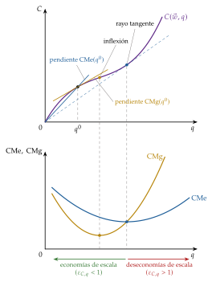
Fuente: elaboración propia a partir de Varian (1992, cap. 5).
Trampa típica del test: \(\varepsilon_{C,q}<1\) son economías de escala (el coste crece menos que la producción) y \(\varepsilon_{C,q}>1\), deseconomías; con la elasticidad de escala es al revés (\(\varepsilon_{q,\lambda}>1\), rendimientos crecientes). La relación \(\varepsilon_{q,\lambda}=1/\varepsilon_{C,q}\) vale en la combinación que minimiza el coste para cualquier tecnología, no solo para las homotéticas.
Economías de escala y rendimientos a escala. Aunque es tentador identificarlos, son conceptos distintos. Los rendimientos a escala son una propiedad de la tecnología: cómo responde la producción si todos los factores varían en la misma proporción \(\lambda\), medidos por la elasticidad de escala local \(\varepsilon_{q,\lambda}(\vec{z})=\sum_i\varepsilon_{q,z_i}=\sum_i\mathrm{PMg}_i/\mathrm{PMe}_i\) [ver tema 3.A.11]. Las economías de escala son una propiedad de los costes: cómo responde el coste cuando la producción crece por la senda de expansión, donde las proporciones pueden cambiar. Aun así, en cada punto de la senda de mínimo coste las dos medidas son inversas (Hanoch, 1975): \[\boxed{\varepsilon_{q,\lambda}\big(\vec{z}(\vec{w},q)\big)=\frac{\mathrm{CMe}}{\mathrm{CMg}}=\frac{1}{\varepsilon_{C,q}}} \tag{27}\]
Demostración: por la condición de primer orden (10), \(w_i=\mu\,\mathrm{PMg}_i\), con \(\mu=\mathrm{CMg}\); luego \(C=\sum_iw_iz_i=\mathrm{CMg}\sum_i\mathrm{PMg}_i\,z_i=\mathrm{CMg}\cdot q\,\varepsilon_{q,\lambda}(\vec{z})\), y dividiendo por \(q\), \(\mathrm{CMe}=\mathrm{CMg}\cdot\varepsilon_{q,\lambda}(\vec{z})\).∎
Sin homoteticidad: no hace falta; la relación vale para cualquier tecnología, siempre que los rendimientos se midan localmente en la combinación que minimiza el coste. Rendimientos locales crecientes en el óptimo equivalen a economías de escala, y decrecientes, a deseconomías.
Con homoteticidad: lo que añade es que la senda de expansión es un rayo: crecer por la senda y ampliar todos los factores en la misma proporción son el mismo movimiento, y la relación se cumple a lo largo de toda la senda. Fuera de ese caso, los rendimientos medidos sobre otro rayo (por ejemplo, el que pasa por la combinación inicial) pueden diferir de las economías de escala que la empresa aprovecha al cambiar las proporciones.
Rendimientos globales: solo se cumplen implicaciones en un sentido (tabla 3): rendimientos crecientes en todo punto dan economías de escala para todo \(q\), pero una función de costes con economías de escala en un tramo no implica rendimientos crecientes globales.
| Rendimientos a escala | Locales, en la combinación de mínimo coste | Globales (en todo punto) |
|---|---|---|
| \(\varepsilon_{q,\lambda}\big(\vec{z}(\vec{w},q)\big)=\mathrm{CMe}/\mathrm{CMg}=1/\varepsilon_{C,q}\) | ||
| Crecientes \(\varepsilon_{q,\lambda}>1\) |
\(\Longleftrightarrow\) economías de escala en ese \(q\) |
\(\Longrightarrow\) economías de escala en todo \(q\) (no al revés) |
| Constantes \(\varepsilon_{q,\lambda}=1\) |
\(\Longleftrightarrow\) CMe constante en ese \(q\) |
\(\Longrightarrow\) \(C(\vec{w},q)=q\,c(\vec{w})\), CMe \(=\) CMg constantes |
| Decrecientes \(\varepsilon_{q,\lambda}<1\) |
\(\Longleftrightarrow\) deseconomías de escala en ese \(q\) |
\(\Longrightarrow\) deseconomías de escala en todo \(q\) (no al revés) |
Con tecnología homotética, la equivalencia de la columna central vale a lo largo de toda la senda de expansión, que es un rayo. Fuente: elaboración propia a partir de Hanoch (1975) y Jehle y Reny (2011, cap. 3).
La curva de coste medio a largo plazo en forma de U responde, por tanto, a una tecnología con rendimientos a escala variables:14 crecientes a escala baja (indivisibilidades, especialización) y decrecientes a escala alta (dificultades de dirección y coordinación), la tecnología «en S» [ver tema 3.A.11]. No se debe a la ley de proporciones variables, que es de corto plazo (apartado II.2).
Con funciones homogéneas, en cambio, el CMe a largo plazo es monótono: \(C(\vec{w},q)=q^{1/k}c(\vec{w})\) da CMe:
decreciente si \(k>1\);
constante si \(k=1\);
creciente si \(k<1\).
Con rendimientos constantes, CMe y CMg son constantes e iguales, y el tamaño de la empresa competitiva queda indeterminado: lo deciden la demanda o la entrada [ver tema 3.A.16].
¿Por qué tiene forma de S invertida la curva de costes totales? A largo plazo, porque la tecnología tiene rendimientos a escala crecientes y después decrecientes (CMe en U). A corto plazo, con un factor fijo, porque el factor variable tiene primero productividad marginal creciente y después decreciente (ley de proporciones variables), de modo que el CMg, \(w_L/\mathrm{PMg}_L\), baja y después sube (apartado II.2). Son dos explicaciones distintas de dos curvas distintas. Con una tecnología cóncava en todos sus tramos (por ejemplo, una Cobb-Douglas con \(\alpha+\beta\leq 1\)), la curva de costes a largo plazo es lineal o convexa desde el origen y no hay tramo de economías de escala.
II.1.2. Análisis de variaciones en el precio de los factores productivos (\(\vec{w}\))
Sobre las demandas de factores
Una vez vistos los cambios en la producción, pasamos a los cambios en los precios de los factores, con \(q\) fijo.
Gráficamente (gráfico 12), la isocuanta de \(q\) queda fija. Si sube \(w_L\), las isocostes se vuelven más inclinadas y la nueva tangencia está más arriba y a la izquierda sobre la misma isocuanta: se usa menos trabajo y más capital para producir lo mismo. Representando \(z_L\) frente a \(w_L\) se obtiene la demanda condicionada de trabajo, \(z_L(\vec{w},q)\), siempre de pendiente no positiva (gráfico 13).
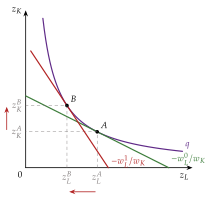
Fuente: elaboración propia a partir de Varian (1992, cap. 5).
Analíticamente, las elasticidades de la demanda condicionada respecto a los precios, \[\varepsilon_{z_i,w_j}\equiv\frac{\partial z_i(\vec{w},q)}{\partial w_j}\,\frac{w_j}{z_i(\vec{w},q)}, \tag{28}\] propia (\(j=i\), siempre no positiva) y cruzada (\(j\neq i\)). Por la homogeneidad de grado cero en \(\vec{w}\), \(\sum_j\varepsilon_{z_i,w_j}=0\); con dos factores, \(\varepsilon_{z_L,w_K}=-\varepsilon_{z_L,w_L}\geq 0\): son sustitutivos netos. Se relacionan con la elasticidad de sustitución de Allen-Uzawa, \(\sigma_{ij}=C\,C_{ij}/(C_iC_j)\), mediante \(\varepsilon_{z_i,w_j}=s_j\,\sigma_{ij}\) (Uzawa, 1962).
¿Hay factores Giffen? No. La demanda condicionada cumple \(\partial z_i(\vec{w},q)/\partial w_i\leq 0\) por la concavidad de \(C\), y la no condicionada de la empresa precio-aceptante, \(\partial z_i(p,\vec{w})/\partial w_i\leq 0\) por la convexidad de \(B\) (I.2). Un factor sí puede ser inferior.
Relación entre las dos demandas: se obtiene derivando respecto a \(w_j\) la identidad \(z_i(p,\vec{w})\equiv z_i\big(\vec{w},q(p,\vec{w})\big)\) de (18). Es la ecuación de Slutsky de los factores [ver tema 3.A.9]: \[\underbrace{\frac{\partial z_i(p,\vec{w})}{\partial w_j}}_{\text{efecto total}}=\underbrace{\frac{\partial z_i(\vec{w},q)}{\partial w_j}}_{\text{efecto sustitución}}+\underbrace{\frac{\partial z_i(\vec{w},q)}{\partial q}\,\frac{\partial q(p,\vec{w})}{\partial w_j}}_{\text{efecto escala}},\qquad q=q(p,\vec{w}). \tag{29}\]
El efecto sustitución recoge el cambio de la combinación óptima con la producción constante; el efecto escala (también llamado efecto producción), el cambio de la producción que maximiza el beneficio. En la empresa sustituye al efecto renta del consumidor, que aquí no existe.
Para el precio propio, de \(p=\partial C(\vec{w},q)/\partial q\) y del lema de Shephard se obtiene \(\partial q(p,\vec{w})/\partial w_i=-\big(\partial z_i(\vec{w},q)/\partial q\big)\big/\big(\partial^2C(\vec{w},q)/\partial q^2\big)\), de modo que el efecto escala es \[-\frac{\big(\partial z_i(\vec{w},q)/\partial q\big)^2}{\partial^2C(\vec{w},q)/\partial q^2}\leq 0\] con coste marginal creciente. Los dos efectos van siempre en el mismo sentido, sea el factor normal o inferior: el efecto escala refuerza al de sustitución, la demanda no condicionada es más elástica que la condicionada (una forma del principio de Le Chatelier-Samuelson, II.2) y no hay factores Giffen (Varian, 1992, cap. 2 y 5; Gravelle y Rees, 2004, cap. 5).
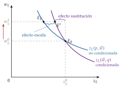
Fuente: elaboración propia a partir de Varian (1992, cap. 2 y 5).
Pregunta habitual del tribunal: ¿puede haber factores Giffen? No: ni la demanda condicionada (concavidad de \(C\)) ni la no condicionada de la empresa precio-aceptante (convexidad de \(B\)) pueden crecer con su propio precio, porque la empresa no tiene restricción presupuestaria ni, por tanto, efecto renta. Sí puede haber factores inferiores, y entonces encarecerlos reduce el coste marginal.
Sobre la función de costes
Si todos los precios de los factores suben en la misma proporción, el coste sube en esa proporción (homogeneidad de grado uno). Si sube uno solo, por el lema de Shephard, la elasticidad del coste respecto al precio de un factor es su participación en el coste: \[\varepsilon_{C,w_i}\equiv\frac{\partial C(\vec{w},q)}{\partial w_i}\,\frac{w_i}{C(\vec{w},q)}=\frac{w_i\,z_i(\vec{w},q)}{C(\vec{w},q)}=s_i, \tag{30}\] que, con \(q\) constante, es también la elasticidad del coste medio.15 Si el trabajo supone el 30 % del coste, una subida del 10 % del salario eleva el coste en torno a un 3 %. Gráficamente, las curvas de coste total y de coste medio se desplazan hacia arriba para todo nivel de producción, no necesariamente en paralelo.
El coste marginal también se desplaza, y en un sentido que depende del factor. Por el lema de Shephard y el teorema de Young, \[\frac{\partial\,\mathrm{CMg}}{\partial w_i}=\frac{\partial^2C(\vec{w},q)}{\partial q\,\partial w_i}=\frac{\partial z_i(\vec{w},q)}{\partial q}. \tag{31}\] Si el factor es normal, su encarecimiento eleva el coste marginal y la empresa competitiva produce menos; si es inferior, el coste marginal baja y la producción aumenta (Gravelle y Rees, 2004, cap. 5).
II.2. Análisis de plazos
La teoría económica distingue, siguiendo a Marshall (1890), dos plazos:
corto plazo: algún factor es fijo (normalmente el capital, el tamaño de la planta);
largo plazo: periodo suficientemente largo para variar todos los factores. Sus costes son costes planeados (ex ante).
Antes de invertir, el empresario está en el largo plazo y puede elegir el tamaño de la planta; una vez invertido, los fondos quedan inmovilizados en capital fijo y opera en el corto plazo. Hasta aquí hemos estudiado el largo plazo; ahora estudiamos la forma de los costes a corto plazo y su relación con los de largo.
Análisis de corto plazo
Problema: es el mismo de antes con una restricción adicional, el factor fijo \(\overline{z}_K\): \[\begin{array}{rl}\displaystyle \min_{z_L} & \displaystyle \underbrace{w_L\,z_L}_{\text{costes variables}}+\underbrace{w_K\,\overline{z}_K}_{\text{costes fijos}} \\ \text{s.a.} & F(z_L,\overline{z}_K)\geq q \\ & z_L\geq 0.\end{array} \tag{32}\] Con el capital fijo, la demanda condicionada de trabajo, \(z_L(\vec{w},q;\overline{z}_K)\), la da la propia función de producción: es la cantidad de trabajo que resuelve \(F(z_L,\overline{z}_K)=q\), sin elección de proporciones. La función de costes a corto plazo es la suma de los costes variables y los fijos: \[\boxed{C(\vec{w},q;\overline{z}_K)=\underbrace{w_L\,z_L(\vec{w},q;\overline{z}_K)}_{\mathrm{CV}(q)}+\underbrace{w_K\,\overline{z}_K}_{\mathrm{CF}}} \tag{33}\]
Relación entre corto y largo plazo (gráfico 14). Por la restricción del factor fijo, el coste a corto plazo de cualquier producción no puede ser menor que el de largo: \(C(\vec{w},q;\overline{z}_K)\geq C(\vec{w},q)\).
Para producir \(q^1\), lo ideal es situarse en \(A\), en la senda de expansión; con el capital fijo en \(\overline{z}_K\), hay que situarse en \(B\), sobre una isocoste más alta.
Para producir \(q^2\), lo ideal es \(D\), cuya dotación de capital coincide con \(\overline{z}_K\): los costes a corto y a largo plazo coinciden y la planta tiene el tamaño óptimo para esa producción.
Por tanto, la empresa produce siempre de forma técnicamente eficiente, y a largo plazo también de forma económicamente eficiente; a corto plazo, solo cuando el factor fijo coincide con el que elegiría si pudiera variarlo, \(\overline{z}_K=z_K(\vec{w},q)\). La curva de costes totales a largo plazo es la envolvente de las de corto plazo, una por cada tamaño de planta.
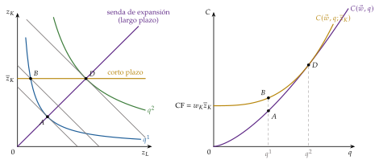
Fuente: elaboración propia a partir de Varian (1992, cap. 5).
Costes a corto plazo (gráfico 15):
los costes fijos (CF) no pueden alterarse a corto plazo ni dependen de la producción (alquileres, equipo, gran parte de los costes indirectos): son una recta horizontal;
los costes variables (CV) dependen de la producción (materias primas, mano de obra no fija) y los costes totales, \(C=\mathrm{CV}+\mathrm{CF}\), tienen la misma forma que los variables, desplazada en CF.
Coste marginal y coste variable medio: como la demanda de trabajo la fija la función de producción, \(dz_L/dq=1/\mathrm{PMg}_L\), y \[\mathrm{CMg}=\frac{w_L}{\mathrm{PMg}_L},\qquad \mathrm{CVMe}=\frac{\mathrm{CV}(q)}{q}=\frac{w_L}{\mathrm{PMe}_L}. \tag{34}\] El coste marginal es la imagen invertida de la productividad marginal del trabajo, y el coste variable medio, la de su productividad media. Mientras la \(\mathrm{PMg}_L\) crece, el CMg baja; cuando, por la ley de proporciones variables (o de rendimientos marginales decrecientes), la \(\mathrm{PMg}_L\) empieza a caer, el CMg sube [ver tema 3.A.11]. De ahí la forma de U del CMg y la de S invertida de los costes variables:
primero crecen cada vez más despacio;
alcanzan un punto de inflexión (el mínimo del CMg);
después crecen cada vez más deprisa.
El CMg corta al CVMe y al CMe en sus mínimos.
Coste medio: el CMe a corto plazo baja al principio por dos razones:
el reparto del coste fijo entre más unidades (el coste fijo medio, \(\mathrm{CFMe}=w_K\overline{z}_K/q\), decrece siempre);
la productividad creciente del trabajo.
El CMe sube cuando el CMg lo supera. Estas fases no son economías y deseconomías de escala, que son un concepto de largo plazo (todos los factores variables): a corto plazo no hay escala que cambiar.
Mínimo y óptimo de explotación: dos puntos que usa la teoría de los mercados [ver tema 3.A.16]:
el mínimo del CVMe (mínimo de explotación): por debajo de ese precio, la empresa competitiva cierra a corto plazo;
el mínimo del CMe (óptimo de explotación): por encima, hay beneficio.
Fases del coste a corto plazo en términos de elasticidades
Las fases de los costes a corto plazo son las etapas de la producción [ver tema 3.A.11] vistas desde los costes. Se ordenan con la elasticidad del coste variable respecto a la producción, que por (34) es la inversa de la elasticidad-producto del trabajo: \[\varepsilon_{\mathrm{CV},q}\equiv\frac{\partial\,\mathrm{CV}(q)}{\partial q}\,\frac{q}{\mathrm{CV}(q)}=\frac{\mathrm{CMg}}{\mathrm{CVMe}}=\frac{w_L/\mathrm{PMg}_L}{w_L/\mathrm{PMe}_L}=\frac{\mathrm{PMe}_L}{\mathrm{PMg}_L}=\frac{1}{\varepsilon_{q,z_L}}. \tag{35}\]
Etapa I: el trabajo es escaso para el factor fijo (\(\mathrm{PMg}_L>\mathrm{PMe}_L\)), el CMg está por debajo del CVMe y este decrece: \(\varepsilon_{\mathrm{CV},q}<1\).
Margen extensivo: el máximo del \(\mathrm{PMe}_L\) es el mínimo del CVMe, el mínimo de explotación: \(\varepsilon_{\mathrm{CV},q}=1\).
Etapa II: con \(0<\mathrm{PMg}_L<\mathrm{PMe}_L\), el CMg supera al CVMe, que crece: \(\varepsilon_{\mathrm{CV},q}>1\). En ella está el óptimo de explotación (mínimo del CMe, \(\varepsilon_{C,q}=\mathrm{CMg}/\mathrm{CMe}=1\)), a la derecha del mínimo de explotación porque el coste fijo medio sigue bajando, y en ella produce la empresa competitiva.
Margen intensivo y etapa III: cuando \(\mathrm{PMg}_L\to 0\), el CMg tiende a infinito (es la capacidad máxima de la planta); con \(\mathrm{PMg}_L<0\), más trabajo cuesta más y produce menos, así que la etapa III nunca está en la función de costes.
La tabla 4 recoge la correspondencia, con los mismos tramos y colores que la de las etapas de la producción [ver tema 3.A.11]. El análogo a largo plazo, con todos los factores variables, es la relación entre \(\varepsilon_{C,q}\) y los rendimientos a escala de la tabla 3.
| Tramo | Productividades | \(\varepsilon_{q,z_L}\) | Costes | \(\varepsilon_{\mathrm{CV},q}\) | Producción |
|---|---|---|---|---|---|
| \(\varepsilon_{\mathrm{CV},q}=\mathrm{CMg}/\mathrm{CVMe}=\mathrm{PMe}_L/\mathrm{PMg}_L=1/\varepsilon_{q,z_L}\) | |||||
| Etapa I | \(\mathrm{PMg}_L>\mathrm{PMe}_L\), \(\mathrm{PMe}_L\) creciente |
\(>1\) | \(\mathrm{CMg}<\mathrm{CVMe}\), CVMe decreciente |
\((0,1)\) | Extensiva |
| Margen extensivo | \(\mathrm{PMg}_L=\mathrm{PMe}_L\) máxima | \(=1\) | \(\mathrm{CMg}=\mathrm{CVMe}\) mínimo (mínimo de explotación) |
\(=1\) | |
| Etapa II | \(0<\mathrm{PMg}_L<\mathrm{PMe}_L\) | \((0,1)\) | \(\mathrm{CMg}>\mathrm{CVMe}\), CVMe creciente |
\(>1\) | Región económica |
| Margen intensivo | \(\mathrm{PMg}_L=0\), \(q\) máximo |
\(=0\) | \(\mathrm{CMg}\to\infty\) (capacidad máxima) |
\(\to\infty\) | |
| Etapa III | \(\mathrm{PMg}_L<0\) | \(<0\) | fuera de la función de costes | — | Intensiva |
El óptimo de explotación (mínimo del CMe, \(\varepsilon_{C,q}=1\)) está dentro de la etapa II, a la derecha del mínimo de explotación. Fuente: elaboración propia a partir de Cassels (1936) y Varian (1992, cap. 5).
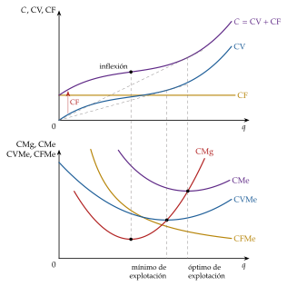
Fuente: elaboración propia a partir de Varian (1992, cap. 5).
Análisis de largo plazo
A largo plazo, la curva de costes totales es la envolvente de las de corto plazo (gráfico 16, arriba) y, del mismo modo, la de coste medio a largo plazo es la envolvente de las de coste medio a corto plazo (abajo): cada una la toca en un punto, aquel en el que el tamaño de planta es el óptimo para esa producción (\(q_1\), \(q_2\) y \(q_3\) en el gráfico).
A la izquierda del mínimo del CMe a largo plazo, la tangencia se produce en el tramo decreciente de la curva de corto plazo: la planta óptima para esa producción se usa por debajo de su mínimo, con exceso de capacidad. A la derecha, en el tramo creciente: se usa con sobrecarga.
Solo en el mínimo del CMe a largo plazo coinciden los mínimos: \(\mathrm{CMe}_{\mathrm{CP}}=\mathrm{CMe}_{\mathrm{LP}}=\mathrm{CMg}_{\mathrm{CP}}=\mathrm{CMg}_{\mathrm{LP}}\). La envolvente no pasa por los mínimos de las curvas de corto plazo: es el error del dibujo original de Viner (1931), que la trazó pasando por todos ellos, cosa imposible salvo en ese punto.
En la producción en la que el coste medio a corto plazo es tangente al de largo, el CMg a corto plazo corta al de largo, porque las curvas de coste total son tangentes: \(\partial C(\vec{w},q;\overline{z}_K)/\partial q=\partial C(\vec{w},q)/\partial q\) con \(\overline{z}_K=z_K(\vec{w},q)\) (teorema de la envolvente).
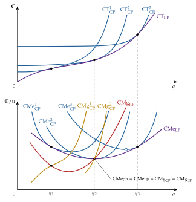
Fuente: elaboración propia a partir de Viner (1931) y Varian (1992, cap. 5).
Comparación entre corto plazo y largo plazo. Principio de Le Chatelier-Samuelson
En el gráfico 16 se ve además que, en el punto de tangencia, el CMg a corto plazo tiene más pendiente que el de largo (lo corta desde abajo).16 Importa porque en competencia perfecta el tramo creciente del CMg, por encima del umbral de cierre, es la curva de oferta de la empresa.
Lo explica el principio de Le Chatelier-Samuelson (Samuelson, 1947, cap. III): cuantas más restricciones tiene la empresa, menos responde a los precios. A largo plazo, las demandas de factores y la oferta son más elásticas que a corto, \[\frac{\partial z_i^{\mathrm{LP}}}{\partial w_i}\leq\frac{\partial z_i^{\mathrm{CP}}}{\partial w_i}\leq 0,\qquad \frac{\partial q^{\mathrm{LP}}}{\partial p}\geq\frac{\partial q^{\mathrm{CP}}}{\partial p}\geq 0, \tag{36}\] y la respuesta es tanto menor cuantos más factores estén fijos, porque la empresa tiene menos margen para adaptarse. Samuelson trasladó a la economía el principio que el químico Henry Le Chatelier enunció en 1884 para los equilibrios químicos (Le Chatelier, 1884): un sistema con menos variables libres responde menos a una perturbación.17
A largo plazo, la forma de los costes refleja los rendimientos a escala de la tecnología (\(\varepsilon_{q,\lambda}=1/\varepsilon_{C,q}\) en el óptimo); a corto, los rendimientos del factor variable. La curva de largo plazo envuelve a las de corto, y la empresa responde más a los precios cuantos menos factores tenga fijos.
Recapitulando lo visto hasta aquí:
la demanda condicionada de un factor nunca crece con su precio, y la no condicionada responde todavía más;
los costes medios a largo plazo son en U si la tecnología tiene rendimientos a escala primero crecientes y después decrecientes;
los de corto plazo, por la ley de proporciones variables.
Todo ello describe una sola función, \(C(\vec{w},q)\), y la dualidad permite estimarla con datos de costes, precios y producción: veamos cómo se pasa de la teoría a los datos.
II.3. Estimación de funciones de costes por dualidad
a) Idea
Estimar directamente la función de producción exige medir las cantidades de factores y supone que la empresa las elige; si los precios de los factores le vienen dados y la producción también (una eléctrica regulada debe atender la demanda), lo natural es estimar la función de costes, cuyos argumentos son exógenos para ella (Nerlove, 1963). Por la dualidad (I.3.1), una función de costes bien comportada contiene toda la información relevante de la tecnología, y por el lema de Shephard da a la vez las demandas de factores.
b) Modelo
i) Supuestos
La empresa minimiza costes, es precio-aceptante en los mercados de factores y su producción es exógena; los datos son de corte transversal o de panel de empresas del mismo sector.
ii) Desarrollo
Forma Cobb-Douglas. De (16), en logaritmos, \[\ln C=\beta_0+\frac{1}{k}\ln q+\sum_i\frac{\alpha_i}{k}\ln w_i, \tag{37}\] lineal en los parámetros: la homogeneidad de grado uno en los precios exige que sus coeficientes sumen 1, y el de \(\ln q\) es la inversa del grado de rendimientos a escala. Es la que estima Nerlove (1963). Impone una elasticidad de sustitución unitaria y el mismo grado de economías de escala a cualquier tamaño.
Formas flexibles. Son aproximaciones de segundo orden a una función de costes cualquiera: no imponen a priori ni la elasticidad de sustitución ni los rendimientos. La más usada es la función de costes translogarítmica (Christensen, Jorgenson y Lau, 1973; Christensen y Greene, 1976): \[\ln C=\alpha_0+\alpha_q\ln q+\tfrac12\beta_{qq}(\ln q)^2+\sum_i\alpha_i\ln w_i+\tfrac12\sum_i\sum_j\beta_{ij}\ln w_i\ln w_j+\sum_i\beta_{iq}\ln w_i\ln q, \tag{38}\] con simetría, \(\beta_{ij}=\beta_{ji}\), y homogeneidad de grado uno en \(\vec{w}\): \(\sum_i\alpha_i=1\), \(\sum_i\beta_{ij}=0\) para todo \(j\) y \(\sum_i\beta_{iq}=0\). Es la misma forma cuadrática en logaritmos que la translog del consumidor [ver tema 3.A.9], aplicada a \(C(\vec{w},q)\).
Participaciones en el coste: por el lema de Shephard, son lineales en los parámetros: \[s_i=\frac{\partial\ln C}{\partial\ln w_i}=\alpha_i+\sum_j\beta_{ij}\ln w_j+\beta_{iq}\ln q,\qquad\sum_is_i=1. \tag{39}\] Se estima el sistema formado por la función de costes y las participaciones (quitando una, porque suman 1), con las restricciones entre ecuaciones.
Economías de escala: \(\varepsilon_{C,q}=\partial\ln C/\partial\ln q=\alpha_q+\beta_{qq}\ln q+\sum_i\beta_{iq}\ln w_i\), que varía con la producción: la translog admite un coste medio en U o en L. El grado de economías de escala se mide con \(1-\varepsilon_{C,q}\).
Sustitución: las elasticidades de Allen-Uzawa son \(\sigma_{ij}=(\beta_{ij}+s_is_j)/(s_is_j)\) para \(i\neq j\) y \(\sigma_{ii}=(\beta_{ii}+s_i^2-s_i)/s_i^2\), y las de las demandas condicionadas, \(\varepsilon_{z_i,w_j}=s_j\,\sigma_{ij}\).
Casos anidados:
con todos los \(\beta=0\) es la Cobb-Douglas;
con \(\beta_{iq}=0\), homotética;
con además \(\beta_{qq}=0\), homogénea.
Otra forma flexible: la Leontief generalizada, \(C(\vec{w},q)=q\sum_i\sum_jb_{ij}\,(w_iw_j)^{1/2}\) con \(b_{ij}=b_{ji}\), que Diewert (1971) propone precisamente como aplicación del teorema de dualidad de Shephard. Las funciones de costes de las formas funcionales habituales están en el anexo G.
iii) Implicaciones
Las restricciones de la teoría (homogeneidad, simetría y concavidad, es decir, \(S(\vec{w},q)\) semidefinida negativa) son contrastables: son las condiciones de integrabilidad de I.3.1. Y las estimaciones dan lo que interesa a la política económica: economías de escala, elasticidades de sustitución y costes marginales.
c) Evidencia empírica
Con una translog de capital, trabajo, energía y materiales para las manufacturas de Estados Unidos, Berndt y Wood (1975) encuentran que la energía y el capital son complementarios, y la energía y el trabajo, sustitutivos: un resultado que una Cobb-Douglas no puede dar, por construcción.
d) Valoración
Las formas flexibles son aproximaciones locales: con muchos factores tienen muchos parámetros, y la concavidad estimada puede fallar lejos del punto de aproximación. Además, la estimación supone que la empresa minimiza costes: si no lo hace, la función estimada es una media de comportamientos, no la frontera. Medir esa distancia es el objeto del apartado II.5.
II.4. Economías de escala y forma de los costes en los datos
Planteado el método de estimación, veamos qué dicen los datos sobre la forma de los costes.
Métodos: la forma de la curva de costes a largo plazo se ha estudiado de tres maneras (Stigler, 1958):
estadístico: estimar funciones de costes con datos de empresas o plantas (II.3);
de ingeniería: calcular, con los datos técnicos de los procesos, el coste de plantas de distinto tamaño;
del superviviente: Stigler (1958) clasifica las empresas de una industria por tamaños y observa cómo evoluciona la cuota de producción de cada clase; los tamaños que ganan cuota son los eficientes. No necesita datos de costes, pero supone que solo sobrevive lo eficiente (y no, por ejemplo, lo que tiene poder de mercado) y da la forma de la curva, no su nivel.
Resultados:
Nerlove (1963) estima, con 145 empresas eléctricas estadounidenses de 1955, una función de costes derivada de una Cobb-Douglas: es una de las primeras aplicaciones empíricas del teorema de dualidad de Shephard. Encuentra economías de escala que se reducen al crecer el tamaño de las empresas.
Christensen y Greene (1976), con una translog de costes y datos de 1955 y 1970, encuentran que en 1955 casi todas las empresas tenían economías de escala por aprovechar, pero que en 1970 el grueso de la generación lo hacían empresas en el tramo prácticamente plano del coste medio (gráfico 17). Concluyen que no hacen falta unas pocas empresas muy grandes para producir con eficiencia: la competencia en la generación no exige sacrificar economías de escala. Es uno de los fundamentos empíricos de la separación entre la generación, abierta a la competencia, y las redes, monopolio natural regulado [ver tema 3.A.17] [ver tema 3.A.20].
En el transporte aéreo, Caves, Christensen y Tretheway (1984) muestran que los mayores costes de las aerolíneas pequeñas no se deben a la escala, sino a la menor densidad de tráfico de su red: hay que distinguir las economías de densidad (más tráfico en la misma red) de las economías de escala (una red más grande). La medida de la «producción» decide el resultado.
Los repasos clásicos de la evidencia estadística (Johnston, 1960; Walters, 1963) y los estudios del superviviente encuentran con frecuencia costes medios a largo plazo decrecientes hasta una escala mínima eficiente y casi constantes después: costes en L, más que en U, como sostiene Stigler (III.3.1).
Las economías de aprendizaje suelen pesar más que las de escala estáticas: en 37 productos químicos, el coste baja con la producción acumulada de la industria y con la inversión acumulada, no con el paso del tiempo, y las economías de escala convencionales son significativas pero pequeñas en comparación (Lieberman, 1984).
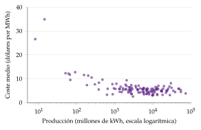
II.5. Medición de la eficiencia: frontera estocástica frente a análisis envolvente de datos
a) Idea
Hasta aquí hemos supuesto que la empresa produce sobre su función de costes; ahora medimos cuánto se aleja de ella. La función de costes es una frontera: el coste mínimo. Las empresas reales pueden estar por encima, como sostiene Leibenstein (III.3.2). Farrell (1957) propone medir la eficiencia como la distancia a la frontera construida con las mejores prácticas observadas, y la descompone en dos partes (gráfico 18). Con la isocuanta unitaria eficiente \(SS'\) (las combinaciones de factores por unidad de producto, \(z_L/q\) y \(z_K/q\), más pequeñas posibles), una empresa que produce en \(P\) y la isocoste tangente en \(Q'\): \[\mathrm{EfT}=\frac{OQ}{OP},\qquad \mathrm{EfA}=\frac{OR}{OQ},\qquad \mathrm{EfE}=\frac{OR}{OP}=\mathrm{EfT}\cdot\mathrm{EfA}, \tag{40}\] donde \(Q\) es el punto de la isocuanta en el rayo \(OP\) y \(R\), el de la isocoste tangente en ese rayo.
La eficiencia técnica (EfT) mide en qué proporción podría la empresa reducir todos sus factores sin producir menos: es lo que Leibenstein llamaría ineficiencia X.
La eficiencia asignativa (EfA) mide si la combinación de factores es la adecuada a sus precios (\(\mathrm{RMST}_{LK}=w_L/w_K\)).
La eficiencia económica o en costes (EfE) es el producto de las dos: el cociente entre el coste mínimo y el observado: si \(C^{\mathrm{obs}}=(1+\chi)\,C(\vec{w},q)\), con \(\chi\geq 0\), \(\mathrm{EfE}=C(\vec{w},q)/C^{\mathrm{obs}}=1/(1+\chi)\). Las tres van de 0 a 1.
La frontera no se conoce: hay que estimarla con las propias observaciones, y hay dos familias de métodos.
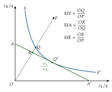
b) Modelo
i) Frontera estocástica (paramétrica)
Aigner, Lovell y Schmidt (1977) y Meeusen y Broeck (1977) proponen una frontera con un error compuesto. En su versión de costes, para cada empresa \(j\): \[\ln C_j^{\mathrm{obs}}=\ln C(\vec{w}_j,q_j)+v_j+u_j,\qquad v_j\sim N(0,\sigma_v^2),\quad u_j\geq 0, \tag{41}\] donde \(v_j\) es ruido (perturbaciones fuera del control de la empresa, errores de medida) y \(u_j=\ln(1+\chi_j)\), la ineficiencia, con una distribución asimétrica (seminormal o exponencial). Se estima por máxima verosimilitud, con una translog como \(C(\cdot)\), y la eficiencia en costes de cada empresa, \(\mathrm{EfE}_j=e^{-u_j}\), se predice a partir de su residuo (Jondrow et al., 1982). Con datos de panel puede explicarse la ineficiencia con características de la empresa (Battese y Coelli, 1995).
ii) Análisis envolvente de datos (no paramétrico)
Charnes, Cooper y Rhodes (1978) hacen operativa la idea de Farrell con programación lineal. Para cada empresa \(0\), con factores \(\vec{z}_0\) y producción \(q_0\), se busca la combinación de empresas observadas que produce al menos \(q_0\) con la menor proporción \(e\) de sus factores: \[\mathrm{EfT}_0=\begin{array}{rl}\displaystyle \min_{e,\,\vec{\tau}} & \displaystyle e \\ \text{s.a.} & \sum_j\tau_j\,\vec{z}_j\leq e\,\vec{z}_0 \\ & \sum_j\tau_j\,q_j\geq q_0 \\ & \tau_j\geq 0\quad\forall j.\end{array} \tag{42}\] La frontera es la envolvente lineal por tramos de los datos: no hay forma funcional ni error aleatorio, y toda distancia a la frontera se atribuye a ineficiencia. Con rendimientos constantes es el modelo CCR; añadiendo \(\sum_j\tau_j=1\) se admiten rendimientos variables (Banker, Charnes y Cooper, 1984), y la comparación entre ambos separa la ineficiencia técnica pura de la de escala. Con los precios de los factores, minimizando \(\vec{w}_0\cdot\vec{z}\) se obtiene la eficiencia en costes y, por cociente, la asignativa.
| Frontera estocástica (SFA) | Análisis envolvente de datos (DEA) | |
|---|---|---|
| Método | econométrico, paramétrico | programación lineal, no paramétrico |
| Forma funcional | hay que elegirla (Cobb-Douglas, translog) | ninguna; solo convexidad y eliminación gratuita |
| Ruido | lo separa de la ineficiencia | no: toda desviación es ineficiencia |
| Varios productos | más difícil (función de costes o de distancia) | inmediato |
| Inferencia | errores típicos y contrastes | sin inferencia directa (bootstrap) |
| Punto débil | supuestos de forma funcional y de distribución de \(u_j\) | sensible a observaciones atípicas y al número de variables |
Fuente: elaboración propia a partir de Coelli et al. (2005) y Kumbhakar y Lovell (2000).
c) Extensiones
Con datos de panel, el crecimiento de la productividad puede descomponerse en cambio técnico (desplazamiento de la frontera) y cambio en la eficiencia (acercamiento a ella), con el índice de Malmquist (Coelli et al., 2005).
d) Evidencia empírica
Banca. Una revisión de 130 estudios de frontera sobre entidades financieras de 21 países concluye que DEA y frontera estocástica no siempre ordenan igual a las entidades (Berger y Humphrey, 1997). El BCE estima con una frontera estocástica y una translog de costes que el banco mediano de la zona del euro podría producir lo mismo con alrededor del 84 % de sus costes (2006-2017); la mayor parte de la ineficiencia es persistente, las entidades grandes son menos eficientes y las pequeñas tienen más economías de escala por aprovechar (Huljak, Martin y Moccero, 2019, 2018). En España, las economías de escala de la banca aumentaron tras la reestructuración posterior a 2012 (Carbó Valverde y Rodríguez Fernández, 2014).
Indicadores contables: dan solo una idea aproximada: en el segundo trimestre de 2026 los gastos de explotación absorbían el 42,9 % del margen bruto de los grandes bancos españoles, frente al 53,1 % del conjunto de la supervisión europea (gráfico 19) (Banco Central Europeo, 2026c, 2026a). Pero esta ratio depende del modelo de negocio y del coste del trabajo, y por eso el BCE prefiere las fronteras de costes.
Regulación de redes. Estas técnicas se usan para fijar los ingresos permitidos según la eficiencia comparada de las empresas, la competencia por comparación (yardstick competition) de Shleifer (1985) [ver tema 3.A.17] [ver tema 3.A.20]. En Alemania, el regulador fija los ingresos máximos de las distribuidoras eléctricas comparando su eficiencia con DEA y con frontera estocástica, se queda con el valor más favorable de los dos (con un mínimo del 60 %) y exige eliminar la ineficiencia durante el periodo regulatorio (Bundesnetzagentur, 2026; Bundesministerium der Justiz, 2007); Jamasb y Pollitt (2001) repasan la experiencia internacional en electricidad.
Sector público. La Comisión Europea aplica frontera estocástica y DEA al gasto en educación y sanidad de los Estados miembros (2000-2022) (Canzonieri y Giamboni, 2024):
casi todos están cerca de la frontera en los indicadores de cantidad y lejos en los de calidad;
el gasto muestra rendimientos decrecientes a escala;
España está entre los más eficientes en la proporción de titulados superiores.
En España se han medido así la eficiencia de los puertos de contenedores, cuyas reformas de los 90 impulsaron más el progreso técnico que la eficiencia (González y Trujillo, 2008), y la de los ayuntamientos valencianos, con DEA (Balaguer-Coll, Prior y Tortosa-Ausina, 2007).
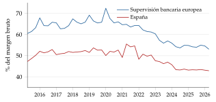
Fuente: elaboración propia con datos de Banco Central Europeo (2026b); último dato, segundo trimestre de 2026.
e) Valoración
Las dos técnicas miden la eficiencia relativa a las mejores prácticas de la muestra, no la absoluta; sus resultados dependen de cómo se definan los factores y los productos y de la heterogeneidad no observada (una red rural no es ineficiente por ser más cara que una urbana). Tampoco explican por qué una empresa es ineficiente: para eso hacen falta modelos de incentivos y de organización [ver tema 3.A.15]. Aun así, han convertido la ineficiencia X de una hipótesis en una magnitud medible y útil para la regulación.
| Sector | Pregunta | Método | Resultado |
|---|---|---|---|
| Generación eléctrica (EE. UU.) | ¿Hay economías de escala? | Cobb-Douglas de costes (Nerlove, 1963); translog (Christensen y Greene, 1976) | Economías de escala que se agotan con el tamaño; en 1970, la mayor parte de la producción en el tramo plano del coste medio |
| Manufacturas (EE. UU.) | ¿Se sustituyen energía y capital? | Translog de capital, trabajo, energía y materiales (Berndt y Wood, 1975) | Energía y capital, complementarios; energía y trabajo, sustitutivos |
| Transporte aéreo (EE. UU.) | ¿Escala o densidad? | Translog (Caves, Christensen y Tretheway, 1984) | Los costes dependen de la densidad de tráfico, no del tamaño de la red |
| Banca (zona del euro y España) | ¿Qué eficiencia y qué escala? | Frontera estocástica con translog (Huljak, Martin y Moccero, 2019) | Eficiencia en costes del 84 % en el banco mediano; más economías de escala en las entidades pequeñas |
| Redes eléctricas (Alemania) | ¿Cuánto debe reducir costes cada distribuidora? | DEA y frontera estocástica en la regulación (Bundesnetzagentur, 2026) | Objetivos de eficiencia individuales en los ingresos permitidos |
| Gasto público (UE) | ¿Es eficiente el gasto en educación y sanidad? | DEA y frontera estocástica (Canzonieri y Giamboni, 2024) | Cerca de la frontera en cantidad, lejos en calidad; rendimientos decrecientes |
| Química | ¿Aprenden las empresas? | Curvas de aprendizaje (Lieberman, 1984) | El coste baja con la producción acumulada; las economías de escala estáticas son menores |
Fuente: elaboración propia a partir de las obras citadas.
La dualidad convierte la teoría de los costes en un instrumento empírico: con costes, precios y producción se estiman las economías de escala y la sustitución entre factores sin conocer la tecnología, y con fronteras se mide cuánto se aleja cada empresa del coste mínimo. La evidencia matiza la teoría (costes en L, ineficiencias persistentes) y la pone al servicio de la regulación y de la competencia.
Recapitulación: la función de costes reacciona a la producción, a los precios de los factores y al plazo según la tecnología, y la dualidad la hace estimable: la translog de costes y sus ecuaciones de participación dan las economías de escala y la sustitución entre factores, y las fronteras miden la distancia al coste mínimo.
Los datos muestran:
costes medios en L más que en U;
economías de escala que se agotan pronto en muchos sectores;
diferencias de eficiencia grandes y persistentes, menores con más competencia.
Queda ver qué implica la forma de los costes para el mercado y cómo se extiende y se critica la teoría.
III. Extensiones y críticas a la teoría de los costes
En el cante: la forma de los costes y la estructura del mercado en una frase con remisión (0′30″), las economías externas (0′30″), Stigler con su gráfico y Leibenstein (2′) y una enumeración de las otras extensiones (0′30″). La competencia perfecta en detalle, el gráfico de la subaditividad, la empresa multiplanta y multiproducto y las curvas de aprendizaje son de profundización, pero conviene conocerlas porque reaparecen en el monopolio natural y en la nueva teoría del comercio.
Una vez analizados los costes y lo que dicen los datos, pasamos a sus extensiones y a sus críticas. Este bloque responde a la última pregunta. Su conclusión anticipada:
la forma de los costes condiciona la estructura del mercado y el tamaño de la empresa;
la teoría se extiende a las economías externas, a varias plantas o productos y al aprendizaje;
sus dos supuestos más discutidos, el coste medio en U y la minimización del coste, son en el fondo cuestiones empíricas, que los datos del bloque II matizan.
III.1. Implicaciones sobre la estructura de mercado
La estructura de costes, junto con el tamaño de la demanda, predetermina cuántas empresas caben en un mercado y, con ello, su configuración. Aquí se recogen solo las propiedades de \(C(\vec{w},q)\) que lo deciden; los mercados se estudian en su lugar [ver tema 3.A.16] [ver tema 3.A.17].
III.1.1. Competencia perfecta en el mercado de bienes
La empresa precio-aceptante produce donde \(p=\mathrm{CMg}\), en el tramo creciente del coste marginal, siempre que el precio cubra el CVMe a corto plazo o el CMe a largo (I.3 y anexo F). Para que haya muchas empresas, las deseconomías de escala tienen que aparecer pronto, a un tamaño pequeño respecto al mercado; con rendimientos constantes, el tamaño de cada empresa queda indeterminado [ver tema 3.A.16].
III.1.2. Monopolio natural uniproducto
Un mercado es un monopolio natural si la función de costes es subaditiva en la producción relevante: para todo reparto de \(q\) entre varias empresas, \[C\Big(\sum_{j=1}^{n}q_j\Big)<\sum_{j=1}^{n}C(q_j), \tag{43}\] es decir, es más barato que toda la producción la haga una sola empresa: la eficiencia productiva exige un único productor. Es la definición de monopolio natural, no un supuesto adicional (Baumol, 1977).
Con un producto, las economías de escala en todo el tramo son condición suficiente pero no necesaria: puede haber subaditividad con el coste medio ya creciente, entre el mínimo del CMe (\(q^0\)) y el punto en que dos empresas empiezan a ser más baratas que una (\(q^1\)) (gráfico 20). La regulación del monopolio natural queda fuera de esta exposición [ver tema 3.A.17] [ver tema 3.A.20].
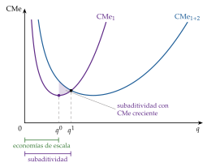
Fuente: elaboración propia a partir de Baumol, Panzar y Willig (1982).
III.1.3. Monopolio natural multiproducto
Con varios productos, la definición sigue siendo la subaditividad de \(C(\vec{w},\vec{q})\). Las economías de alcance (III.4.2) son una condición necesaria, no suficiente: una condición suficiente es que, además, el coste incremental medio de cada producto sea decreciente (economías de escala específicas de cada producto) (Baumol, Panzar y Willig, 1982) [ver tema 3.A.17].
III.2. Economías de escala
Una vez vista la forma de los costes de cada empresa, pasamos a los que dependen de la industria. Las economías de escala estudiadas hasta aquí son internas: dependen de la producción de la propia empresa y están en su función de costes. Marshall (1890) distingue las economías externas: el coste medio de cada empresa baja cuando crece la producción de toda la industria, aunque la de la empresa no cambie. No mueven a la empresa a lo largo de su curva de costes, sino que desplazan la curva hacia abajo.
Sus fuentes son las de la aglomeración que describe Marshall:
un mercado de trabajo especializado;
proveedores de factores especializados;
la difusión de conocimientos entre empresas cercanas (clusters industriales).
Las economías de aprendizaje son otra cosa: dependen de la producción acumulada, son dinámicas y, sobre todo, internas a la empresa que aprende (III.4.3). Solo son externas en la medida en que lo aprendido se difunde a las demás empresas de la industria.
Las economías externas son compatibles con la competencia perfecta (cada empresa sigue siendo pequeña) y explican la especialización y el comercio entre países parecidos [ver tema 3.B.6]; junto con el aprendizaje, se han usado para justificar la protección de la industria naciente [ver tema 3.B.8].
III.3. Críticas y extensiones a la teoría neoclásica de los costes desde la Teoría de la Organización Industrial
La teoría expuesta ha sido cuestionada en sus fundamentos y en sus implicaciones empíricas, sobre todo desde la organización industrial [ver tema 3.A.15]. Dos críticas atacan sus dos supuestos centrales: la forma en U del coste medio y la minimización del coste.
III.3.1. La teoría de los costes de Stigler y la reserva de capacidad
a) Idea
Stigler (1939) cuestiona, en lo teórico y en lo empírico, que el coste medio tenga forma de U, con un único tamaño óptimo. Si la demanda es incierta, a la empresa le conviene una planta flexible.
b) Modelo
i) Supuestos
La empresa puede elegir entre una planta con un coste medio mínimo muy bajo en un nivel de producción (una U cerrada) y otra con un coste medio algo mayor en el mínimo pero casi constante en un intervalo amplio.
El factor «fijo» es divisible en la práctica (más o menos máquinas, turnos o líneas en uso), y la demanda fluctúa.
ii) Desarrollo
El factor «fijo» se ajusta con el variable y la proporción entre ambos no cambia: el CVMe y el CMg son constantes e iguales en ese tramo, la reserva de capacidad, y solo suben al agotarla (gráfico 21).
iii) Implicaciones
Con la demanda fluctuante, la planta flexible tiene un coste esperado menor aunque su mínimo sea mayor. No hay un tamaño óptimo, sino una horquilla de tamaños óptimos.
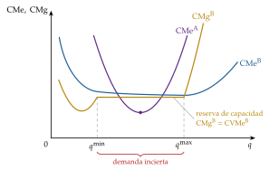
Fuente: elaboración propia a partir de Stigler (1939).
c) Evidencia empírica
Los estudios estadísticos y de ingeniería encuentran a menudo costes medios a largo plazo en forma de L: decrecientes hasta una escala mínima eficiente y casi constantes después (apartado II.4).
d) Valoración
La crítica no discute que la empresa minimice costes, sino la forma de la curva. La de Leibenstein va más lejos.
III.3.2. Ineficiencia X de Leibenstein (1966)
a) Idea
¿Producen las empresas sobre su función de costes? Leibenstein (1966) sostiene que, sin presión competitiva, no: los costes observados están por encima de \(C(\vec{w},q)\), porque ciertos factores no dan la producción que podrían. Llama ineficiencia X a esa distancia, para distinguirla de la ineficiencia asignativa (precio distinto del coste marginal, o combinación de factores inadecuada a sus precios).
b) Modelo
i) Supuestos
Los contratos de trabajo son incompletos: fijan el salario, pero no el esfuerzo, la carga de trabajo ni todas las tareas.
El esfuerzo lo eligen los trabajadores y directivos, les resulta costoso y responde a la presión externa: con poca presión se relajan.
La función de producción no está completamente especificada ni es conocida por la empresa, y no todos los factores (por ejemplo, la capacidad de dirección) se compran en mercados.
ii) Desarrollo
Una forma sencilla de recogerlo: el coste observado es \[C^{\mathrm{obs}}(\vec{w},q)=(1+\chi)\,C(\vec{w},q),\qquad \chi\geq 0, \tag{44}\] con \(\chi\) decreciente en la intensidad de la competencia.
iii) Implicaciones
Con competencia intensa, la amenaza de cierre disciplina el esfuerzo; en el monopolio o en la empresa protegida, la «vida tranquila» eleva los costes, y la pérdida de bienestar del monopolio es mayor que el triángulo de Harberger [ver tema 3.A.17]. Leibenstein estima que la ineficiencia X puede ser mucho mayor que la asignativa (Leibenstein, 1982).
Una subida del precio del producto debida a menos competencia puede traducirse en más costes, y no en más beneficio, si los trabajadores se relajan.
c) Evidencia empírica
Nickell (1996) encuentra que la competencia se asocia a un mayor crecimiento de la productividad de las empresas británicas, y las encuestas de prácticas de gestión muestran grandes diferencias entre empresas, con peores prácticas donde hay menos competencia (Bloom y Van Reenen, 2007). Las fronteras de eficiencia del apartado II.5 miden precisamente la distancia al coste mínimo.
d) Valoración
Stigler (1976) replica que lo que Leibenstein llama ineficiencia es minimización de costes con otros argumentos (el ocio de los trabajadores, el coste de supervisarlos): vigilar el esfuerzo solo compensa hasta que su coste marginal iguala su beneficio marginal. El debate desemboca en la teoría de la agencia y de los contratos incompletos [ver tema 3.A.15].
III.4. Otras extensiones a la teoría neoclásica de los costes
Más allá de las críticas, la teoría se extiende a empresas con varias plantas, con varios productos y que aprenden con el tiempo.
III.4.1. Análisis de costes de la empresa multiplanta
Si la empresa tiene \(J\) plantas con costes \(C_j(q_j)\) y quiere producir \(q\) al mínimo coste, resuelve \[\begin{array}{rl}\displaystyle \min_{q_1,\dots,q_J} & \displaystyle \sum_{j=1}^{J}C_j(q_j) \\ \text{s.a.} & \sum_{j=1}^{J}q_j=q \\ & q_j\geq 0.\end{array}\] En las plantas que producen, \(\mathrm{CMg}_1(q_1)=\dots=\mathrm{CMg}_J(q_J)\): el reparto iguala los costes marginales, y el coste marginal de la empresa es la suma horizontal de los de sus plantas. Si alguno es constante, la empresa llena antes las plantas más baratas y añade las demás por orden de coste (Gravelle y Rees, 2004, cap. 5).
III.4.2. Análisis de la empresa multiproducto
Con varios productos, \(C(\vec{w},\vec{q})\) con \(\vec{q}=(q_1,q_2)\), aparecen conceptos nuevos (Baumol, Panzar y Willig, 1982):
economías de alcance: \(C(q_1,q_2)<C(q_1,0)+C(0,q_2)\), producir juntos es más barato que por separado (gráfico 22). Surgen de factores compartidos o «cuasipúblicos» (una red, una marca, un conocimiento) que, adquiridos para un producto, sirven para otro sin coste o con poco (Panzar y Willig, 1981);
complementariedad de costes: \(\partial^2C/\partial q_1\partial q_2<0\), el coste marginal de un producto baja al producir más del otro; si se cumple en todo el tramo, implica economías de alcance;
economías de escala multiproducto: el coste medio a lo largo de un rayo, \(C(\lambda\,\vec{q}^0)/\lambda\), decrece al aumentar \(\lambda\), con las proporciones de los productos fijas.
Explican la diversificación y el tamaño eficiente de la empresa, que abarca más o menos actividades según la intensidad de las economías de alcance [ver tema 3.A.11] [ver tema 3.A.15].
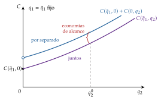
Fuente: elaboración propia a partir de Baumol, Panzar y Willig (1982).
III.4.3. Análisis dinámico: curvas de aprendizaje
Las empresas aprenden produciendo: el coste unitario baja con la producción acumulada, \(Q^{\mathrm{ac}}_t=\sum_{\tau\leq t}q_\tau\), no con la corriente. La curva de aprendizaje suele especificarse como \(c(Q^{\mathrm{ac}})=c_1\,(Q^{\mathrm{ac}})^{-b}\), con \(b>0\): cada vez que se duplica la producción acumulada, el coste unitario se multiplica por \(2^{-b}\). Wright (1936) la documentó en la fabricación de aviones. En los módulos fotovoltaicos, el precio ha caído alrededor de un 27 % con cada duplicación de la producción mundial acumulada (Fraunhofer Institute for Solar Energy Systems ISE, 2026): \(2^{-b}\approx 0{,}73\), es decir, \(b\approx 0{,}45\).
Son economías dinámicas: la escala mueve a la empresa a lo largo de su curva de costes; el aprendizaje desplaza la curva hacia abajo para cualquier producción corriente (gráfico 23).
Las economías de aprendizaje:
dan ventaja a quien entra primero;
pueden justificar precios iniciales por debajo del coste para aprender antes;
fundamentan el argumento de la industria naciente [ver tema 3.B.8].
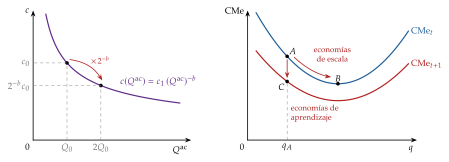
Recapitulación: la forma de los costes decide cuántas empresas caben en un mercado, y la teoría se completa con las economías externas, la empresa con varias plantas o productos y el aprendizaje. Stigler y Leibenstein discuten sus dos supuestos centrales, la U del coste medio y la minimización del coste, y los datos del bloque II les dan en buena parte la razón: costes en L y empresas que no siempre producen al coste mínimo.
Conclusión
Recapitulación (ideas clave):
La función de costes resume la elección de la combinación de factores más barata: es cóncava y homogénea de grado uno en los precios de los factores, sus derivadas son las demandas condicionadas (Shephard) y contiene la misma información que la tecnología. Con la función de beneficio (Hotelling) y el problema en dos etapas (\(p=\mathrm{CMg}\)), cierra el triángulo entre tecnología, costes y oferta (I).
Su forma depende del plazo:
a largo plazo, de los rendimientos a escala (\(\varepsilon_{q,\lambda}=1/\varepsilon_{C,q}\) en el óptimo);
a corto, de la productividad del factor variable;
la curva de largo plazo envuelve a las de corto.
Gracias a la dualidad se estima con datos de costes, precios y producción: la evidencia apoya costes medios en L y muestra diferencias de eficiencia persistentes entre empresas (II).
Más allá del análisis (III):
la forma de los costes decide la estructura del mercado;
la teoría se extiende a las economías externas, a varias plantas o productos y al aprendizaje;
Stigler y Leibenstein discuten la U del coste medio y la minimización del coste, críticas que los datos respaldan en buena parte.
Relevancia: la estructura de costes decide cuántas empresas caben en un mercado y si conviene regularlo; los costes son la referencia de los reguladores (ingresos permitidos, comparación de eficiencias) y de las autoridades de competencia, y la base de la medición de la productividad.
Extensiones y relación con otras partes del temario:
la función de costes y la estructura del mercado dan la oferta: en competencia perfecta [ver tema 3.A.16], en monopolio y monopolio natural [ver tema 3.A.17] y en oligopolio [ver tema 3.A.19];
el tamaño eficiente y los límites de la empresa [ver tema 3.A.15] y la regulación del poder de mercado, donde la medición de la eficiencia sirve para regular por comparación [ver tema 3.A.20];
la misma dualidad del consumidor [ver tema 3.A.9], y la demanda derivada de factores en el mercado de trabajo [ver tema 3.A.25];
las economías de escala internas y externas en el comercio internacional [ver tema 3.B.6] y las de aprendizaje en la protección de la industria naciente [ver tema 3.B.8].
Opinión: el supuesto más frágil no es la forma de la curva, sino la precio-aceptación en los mercados de factores. Con poder de monopsonio, el precio de un factor depende de la cantidad que se compra y las isocostes dejan de ser rectas [ver tema 3.A.17]; en equilibrio general, los precios de los factores dejan de ser datos [ver tema 3.A.21]. Y la ineficiencia X recuerda que el coste mínimo es un objetivo que la competencia ayuda a alcanzar, no un dato.
Idea final: volviendo a la fotovoltaica, ¿cuánto de su abaratamiento se debe a la escala, al aprendizaje y a los precios de los factores? Su coste ha caído un 89 % desde 2010 por la escala y, sobre todo, por el aprendizaje (la práctica hace al maestro), que desplaza la curva de costes hacia abajo; pero en 2025 los equipos se abarataron un 6 % y el coste nivelado no bajó, porque subió el coste del capital (International Renewable Energy Agency, 2026). La función de costes \(C(\vec{w},q)\) recoge las tres cosas, tecnología, escala y precios de los factores, y la dualidad permite separarlas con datos: esa es la utilidad de la teoría de los costes.
Lecturas complementarias
Mas-Colell, Whinston y Green (1995, cap. 5): apartados 5.C (maximización del beneficio y minimización del coste) y 5.D (geometría de los costes y oferta).
Varian (1992, cap. 4–6): costes, geometría de los costes y dualidad.
Coelli et al. (2005): introducción a la medición de la eficiencia y la productividad (DEA, frontera estocástica e índices de Malmquist).
Tema ICEX-CECO de teoría de los costes y dualidad, que sigue el enfoque de Segura (1996) (el primal del anexo D).
A. Anexo: condiciones de Kuhn-Tucker de la maximización del beneficio y la minimización del coste
Los dos problemas son \[\begin{array}{rl}\displaystyle \max_{\vec{z}} & \displaystyle p\,F(\vec{z})-\vec{w}\cdot\vec{z} \\ \text{s.a.} & \vec{z}\geq\vec{0}\end{array}\qquad\text{y}\qquad\begin{array}{rl}\displaystyle \min_{\vec{z}} & \displaystyle \vec{w}\cdot\vec{z} \\ \text{s.a.} & F(\vec{z})\geq q \\ & \vec{z}\geq\vec{0},\end{array}\] y el segundo se resuelve con la lagrangiana \(\mathcal{L}=\vec{w}\cdot\vec{z}+\mu\big(q-F(\vec{z})\big)\). Sus condiciones de primer orden son las de la tabla 7.
| MB: \(\max p\,F(\vec{z})-\vec{w}\cdot\vec{z}\) | MC: \(\min\vec{w}\cdot\vec{z}\) s.a. \(F(\vec{z})\geq q\) | |
|---|---|---|
| Estacionariedad | \(p\,F_i-w_i\leq 0\ \Rightarrow\ p\,F_i\leq w_i\) | \(w_i-\mu F_i\geq 0\ \Rightarrow\ \dfrac{w_i}{F_i}\geq\mu\) |
| Restricción | — | \(F(\vec{z})-q\geq 0\), \(\mu\geq 0\), \(\mu\big(F(\vec{z})-q\big)=0\) |
| No negatividad | \(z_i\geq 0\) | \(z_i\geq 0\) |
| Holgura complementaria | \(z_i\,(p\,F_i-w_i)=0\) | \(z_i\,(w_i-\mu F_i)=0\) |
| Solución interior | \(p\,\mathrm{PMg}_i=w_i\) | \(\dfrac{w_1}{\mathrm{PMg}_1}=\dots=\dfrac{w_n}{\mathrm{PMg}_n}=\mu\) |
En ambos: \(\mathrm{RMST}_{LK}=\mathrm{PMg}_L/\mathrm{PMg}_K=w_L/w_K\). En la combinación común (producción \(q=q(p,\vec{w})\)), \(\mu^*=\mathrm{CMg}=p\). Fuente: elaboración propia basada en Mas-Colell, Whinston y Green (1995, § 5.C).
Estacionariedad: en la MB, el valor del producto marginal de cada factor no puede superar su precio; si el factor se usa, lo iguala. En la MC, el precio de cada factor no puede ser menor que el coste de la producción que aporta, \(\mu F_i\).
Restricción: en la MC, por la continuidad y la monotonía de \(F\), \(\mu>0\) y se produce exactamente \(q\).
Holgura complementaria: para cada factor, o se usa y la estacionariedad se cumple con igualdad, o no se usa (solución de esquina) y la desigualdad puede ser estricta.
A.1. Condiciones de segundo orden
Maximización del beneficio (sin restricciones de igualdad): la hessiana del beneficio, \(p\,D^2F(\vec{z}^*)\), debe ser semidefinida negativa. Con dos factores, si es definida negativa, \(F_{LL}<0\) y \(F_{LL}F_{KK}-F_{LK}^2>0\): cada factor tiene productividad marginal decreciente y, además, los rendimientos son decrecientes. No basta, pues, la ley de los rendimientos decrecientes de cada factor.
Minimización del coste (una restricción): con dos factores y solución interior, se comprueba con el hessiano orlado de la función de producción, como el de la utilidad en el consumidor [ver tema 3.A.9]: \[\overline{H}=\begin{pmatrix}0&F_L&F_K\\F_L&F_{LL}&F_{LK}\\F_K&F_{KL}&F_{KK}\end{pmatrix},\qquad |\overline{H}|=2F_LF_KF_{LK}-F_K^2F_{LL}-F_L^2F_{KK}\] (regla de Sarrus). La hessiana orlada de la lagrangiana, con orla \(-F_i\) y bloque \(-\mu F_{ij}\), tiene determinante \(-\mu|\overline{H}|\), que en un mínimo debe ser negativo: basta \(|\overline{H}|>0\), que equivale a isocuantas estrictamente convexas en el óptimo, porque a lo largo de una isocuanta \(\frac{d^2z_K}{dz_L^2}=\frac{|\overline{H}|}{F_K^3}\).
Con \(n\) factores: los menores principales directores orlados de orden \(k+1\) (\(k=2,\dots,n\)) deben ser todos negativos en el mínimo (Sydsæter et al., 2008, cap. 3).
B. Anexo: teorema de la envolvente, lemas de Hotelling y de Shephard
Teorema de la envolvente: la derivada de la función valor de un problema de optimización respecto a un parámetro es la derivada parcial de la función objetivo (o de la lagrangiana) respecto a ese parámetro, evaluada en el óptimo. El ajuste de las variables de elección no altera el valor en primer orden, porque ya eran óptimas.
B.1. Lema de Hotelling
Por la envolvente. Con \(B(p,\vec{w})=p\,F\big(\vec{z}(p,\vec{w})\big)-\vec{w}\cdot\vec{z}(p,\vec{w})\): \[\frac{\partial B(p,\vec{w})}{\partial p}=F\big(\vec{z}(p,\vec{w})\big)=q(p,\vec{w}),\qquad\frac{\partial B(p,\vec{w})}{\partial w_i}=-z_i(p,\vec{w}).\] Es el lema.∎
Sin cálculo diferencial, por la convexidad. Para cualesquiera precios \((p',\vec{w}')\), el plan \(\big(q(p,\vec{w}),\vec{z}(p,\vec{w})\big)\) sigue siendo posible, así que \(g(p',\vec{w}')\equiv B(p',\vec{w}')-\big(p'\,q(p,\vec{w})-\vec{w}'\cdot\vec{z}(p,\vec{w})\big)\geq 0\), con \(g(p,\vec{w})=0\). La función \(g\) tiene un mínimo en \((p,\vec{w})\) y su gradiente se anula allí, que es el lema (Mas-Colell, Whinston y Green, 1995, prop. 5.C.1).∎
B.2. Lema de Shephard
Por la envolvente. Con \(\mathcal{L}=\vec{w}\cdot\vec{z}+\mu\big(q-F(\vec{z})\big)\): \[\frac{\partial C(\vec{w},q)}{\partial w_i}=\frac{\partial\mathcal{L}}{\partial w_i}\bigg|_{\vec{z}^*,\mu^*}=z_i(\vec{w},q),\qquad\frac{\partial C(\vec{w},q)}{\partial q}=\frac{\partial\mathcal{L}}{\partial q}\bigg|_{\vec{z}^*,\mu^*}=\mu^*.\] La segunda igualdad es la interpretación del multiplicador como coste marginal.∎
Sin cálculo diferencial, por la concavidad. Para cualquier \(\vec{w}'\), la combinación \(\vec{z}(\vec{w},q)\) sigue produciendo \(q\), así que \(g(\vec{w}')\equiv\vec{w}'\cdot\vec{z}(\vec{w},q)-C(\vec{w}',q)\geq 0\), con \(g(\vec{w})=0\). La función \(g\) tiene un mínimo en \(\vec{w}'=\vec{w}\) y su gradiente se anula allí: \(z_i(\vec{w},q)-\partial C(\vec{w},q)/\partial w_i=0\) (Mas-Colell, Whinston y Green, 1995, prop. 5.C.2).∎
Intuición: si \(w_i\) sube un euro, el efecto directo es pagar \(z_i\) euros más; la reoptimización de la combinación no altera el coste en primer orden.
C. Anexo: matriz hessiana, concavidad y cuasiconcavidad
Sea \(A\subseteq\mathbb{R}^n\) un conjunto abierto y convexo y \(f:A\to\mathbb{R}\) una función con segundas derivadas parciales continuas. Su vector gradiente \(\nabla f(\vec{a})\) recoge las primeras derivadas y su matriz hessiana \(H_f(\vec{a})=\big[\partial^2f/\partial x_i\partial x_j\big]\), las segundas; es simétrica (teorema de Schwarz).
Concavidad y convexidad:
\(f\) es convexa si y solo si \(H_f(\vec{a})\) es semidefinida positiva para todo \(\vec{a}\in A\); si es definida positiva para todo \(\vec{a}\), \(f\) es estrictamente convexa, y cualquier punto en el que se anulan todas las derivadas parciales es un mínimo;
\(f\) es cóncava si y solo si \(H_f(\vec{a})\) es semidefinida negativa para todo \(\vec{a}\in A\); si es definida negativa para todo \(\vec{a}\), \(f\) es estrictamente cóncava, y cualquier punto en el que se anulan todas las derivadas parciales es un máximo.
Los recíprocos de las condiciones estrictas no se cumplen: \(f(x)=-x^4\) es estrictamente cóncava y su hessiana se anula en \(x=0\).
Criterio de los menores. Una matriz simétrica es definida positiva si todos sus menores principales directores son positivos, y definida negativa si alternan en signo empezando por negativo (\(|H_1|<0\), \(|H_2|>0\), …). Para la semidefinición hay que mirar todos los menores principales, no solo los directores: es semidefinida negativa si los de orden \(k\) tienen signo \((-1)^k\) o son nulos, y semidefinida positiva si todos son no negativos (Sydsæter et al., 2008, cap. 1).
Cuasiconcavidad. \(f\) es cuasicóncava si sus conjuntos de nivel superior, \(\{\vec{x}: f(\vec{x})\geq c\}\), son convexos para todo \(c\); con dos factores, si sus isocuantas son convexas. Toda función cóncava es cuasicóncava, pero no al revés. Se comprueba con la hessiana orlada con el gradiente (anexo A): con dos variables, \(f\) es estrictamente cuasicóncava si \(|\overline{H}|>0\).
Uso en la teoría de la empresa:
Maximización del beneficio: la hessiana del beneficio respecto a los factores es \(p\,D^2F(\vec{z})\); la condición de segundo orden exige que sea semidefinida negativa en el óptimo, y con \(F\) cóncava las condiciones de primer orden bastan (I.2.1).
Minimización del coste: basta la cuasiconcavidad de \(F\) (isocuantas convexas), que con dos factores se comprueba con \(|\overline{H}|>0\) (I.2.2).
Función de costes: su concavidad en \(\vec{w}\) equivale a que la matriz de sustitución \(S(\vec{w},q)=D^2_{\vec{w}}C(\vec{w},q)\) sea semidefinida negativa, de donde \(\partial z_i(\vec{w},q)/\partial w_i\leq 0\); es la misma propiedad que la de la función de gasto y la matriz de Slutsky del consumidor [ver tema 3.A.9].
Función de beneficio: su convexidad en \((p,\vec{w})\) equivale a que \(D^2B(p,\vec{w})\) sea semidefinida positiva, de donde \(\partial q(p,\vec{w})/\partial p\geq 0\) y \(\partial z_i(p,\vec{w})/\partial w_i\leq 0\).
D. Anexo: la dualidad en sentido estricto: maximizar la producción con un coste dado
Este anexo no se canta. Algún manual plantea la dualidad de la empresa como la del consumidor, con un «primal» que maximiza la producción con un coste dado (Segura, 1996): \[\begin{array}{rl}\displaystyle \max_{\vec{z}} & \displaystyle F(\vec{z}) \\ \text{s.a.} & \vec{w}\cdot\vec{z}\leq\overline{C} \\ & \vec{z}\geq\vec{0}.\end{array}\]
Tiene la misma tangencia, \(\mathrm{RMST}_{LK}=w_L/w_K\). Su solución son unas demandas de factores \(\vec{z}(\vec{w},\overline{C})\), y su función valor, la función de producción indirecta \(\chi(\vec{w},\overline{C})\), la máxima producción que permite un presupuesto \(\overline{C}\); son las análogas de la demanda marshalliana y de la función indirecta de utilidad. Las demandas se obtienen de \(\chi\) con una identidad de Roy, \(z_i(\vec{w},\overline{C})=-\dfrac{\partial\chi(\vec{w},\overline{C})/\partial w_i}{\partial\chi(\vec{w},\overline{C})/\partial\overline{C}}\).
Las relaciones son las del consumidor [ver tema 3.A.9]: \(C\big(\vec{w},\chi(\vec{w},\overline{C})\big)=\overline{C}\) y \(\chi\big(\vec{w},C(\vec{w},q)\big)=q\) (inversas en su segundo argumento), y \(\vec{z}(\vec{w},q)=\vec{z}\big(\vec{w},C(\vec{w},q)\big)\). La tecnología se recupera con \(F(\vec{z}^0)=\min_{\vec{w}}\chi(\vec{w},\vec{w}\cdot\vec{z}^0)\), como la utilidad a partir de la función indirecta.
Derivando respecto a \(w_j\) la identidad entre las demandas y aplicando el lema de Shephard sale una descomposición formalmente igual a la de Slutsky: \[\frac{\partial z_i(\vec{w},\overline{C})}{\partial w_j}=\frac{\partial z_i(\vec{w},q)}{\partial w_j}-z_j\,\frac{\partial z_i(\vec{w},\overline{C})}{\partial\overline{C}},\] en la que el segundo término mide el efecto de la pérdida de «poder de compra» del presupuesto de la empresa.
Es correcto, pero poco habitual:
la empresa no tiene un presupuesto fijo que la obligue a producir lo máximo posible con él;
sus demandas \(\vec{z}(\vec{w},\overline{C})\) no tienen nombre propio en la literatura;
no hay una restricción presupuestaria que dé un efecto renta.
Los manuales de referencia (Mas-Colell, Whinston y Green, 1995, cap. 5; Jehle y Reny, 2011, cap. 3) estudian, en su lugar, la minimización del coste (dual de la tecnología) y la maximización del beneficio, cuya descomposición tiene un efecto escala (apartado II.1.2).
El gráfico 24 reúne los tres problemas:
el primal de Segura (en azul);
la minimización del coste (en verde);
la maximización del beneficio en dos etapas y en una (a la derecha);
en la franja central, las relaciones entre los dos primeros.
Respecto al cuadro de la versión anterior de este tema, del que parte, se corrigen cuatro erratas:
el lema de Shephard no lleva signo menos: \(z_i(\vec{w},q)=\partial C(\vec{w},q)/\partial w_i\);
las identidades entre las funciones valor son \(C\big(\vec{w},\chi(\vec{w},\overline{C})\big)=\overline{C}\) y \(\chi\big(\vec{w},C(\vec{w},q)\big)=q\): cada función es la inversa de la otra en su segundo argumento (el cuadro anterior escribía \(\chi\) en los dos lados de la primera y una \(C\) igualada a \(\chi\) en la segunda);
en la función de beneficio se resta el coste de los factores, \(\vec{w}\cdot\vec{z}(p,\vec{w})\), con la demanda no condicionada (no la condicionada);
los rótulos de las dos flechas cruzadas entre las demandas estaban intercambiados: cada identidad va ahora con la flecha que llega a la demanda que define, \(\vec{z}(\vec{w},q)=\vec{z}\big(\vec{w},C(\vec{w},q)\big)\) hacia las condicionadas y \(\vec{z}(\vec{w},\overline{C})=\vec{z}\big(\vec{w},\chi(\vec{w},\overline{C})\big)\) hacia las de Segura.
E. Anexo: estática comparativa de las demandas de factores y de la función de costes
Elasticidades de las demandas condicionadas:
respecto a la producción, \(\varepsilon_{z_i,q}\): derivando \(C=\sum_iw_iz_i(\vec{w},q)\) respecto a \(q\) y multiplicando por \(q/C\), \[\varepsilon_{C,q}=\sum_i\frac{w_iz_i}{C}\,\frac{\partial z_i}{\partial q}\,\frac{q}{z_i}=\sum_is_i\,\varepsilon_{z_i,q};\] con una tecnología homogénea de grado \(k\), todas son iguales a \(\varepsilon_{C,q}=1/k\);
respecto a los precios, \(\varepsilon_{z_i,w_j}\): por la homogeneidad de grado cero en \(\vec{w}\) (teorema de Euler), \(\sum_j\varepsilon_{z_i,w_j}=0\); y por \(S(\vec{w},q)\,\vec{w}=\vec{0}\) y la simetría, \(\sum_is_i\,\varepsilon_{z_i,w_j}=0\).
Curva de Engel del factor y demanda del factor en función de su precio: la primera relaciona \(z_i(\vec{w},q)\) con \(q\), a precios dados (gráfico 10); la segunda, \(z_i\) con \(w_i\), con la producción (demanda condicionada) o con el precio del producto (no condicionada) constantes (gráfico 13). Si el salario sube de \(w_L^0\) a \(w_L^1\), la empresa pasa de \(E_0\) a \(E'\) por el efecto sustitución (sobre la demanda condicionada) y de \(E'\) a \(E_1\) por el efecto escala (hasta la no condicionada).
Ecuación de Slutsky de los factores. Se parte de la identidad (18), \(z_i(p,\vec{w})\equiv z_i\big(\vec{w},q(p,\vec{w})\big)\), y se deriva respecto a \(w_j\) con la regla de la cadena, lo que da (29). Para el efecto de \(w_j\) sobre la producción, se deriva la condición \(p=\partial C\big(\vec{w},q(p,\vec{w})\big)/\partial q\): \[0=\frac{\partial^2C}{\partial q\,\partial w_j}+\frac{\partial^2C}{\partial q^2}\,\frac{\partial q(p,\vec{w})}{\partial w_j}\quad\Longrightarrow\quad\frac{\partial q(p,\vec{w})}{\partial w_j}=-\frac{\partial z_j(\vec{w},q)/\partial q}{\partial^2C/\partial q^2},\] porque \(\partial^2C/\partial q\,\partial w_j=\partial z_j(\vec{w},q)/\partial q\) (Shephard y Young). Sustituyendo, \[\frac{\partial z_i(p,\vec{w})}{\partial w_j}=\frac{\partial z_i(\vec{w},q)}{\partial w_j}-\frac{\dfrac{\partial z_i(\vec{w},q)}{\partial q}\,\dfrac{\partial z_j(\vec{w},q)}{\partial q}}{\partial^2C/\partial q^2},\] que es simétrica en \(i\) y \(j\), como exige Hotelling. Con \(j=i\) y coste marginal creciente, el segundo término es no positivo: refuerza al primero. Del mismo modo, derivando la condición respecto a \(p\), \(\partial q(p,\vec{w})/\partial p=1/(\partial^2C/\partial q^2)\geq 0\).∎
Coste marginal y precios de los factores: \(\partial\mathrm{CMg}/\partial w_i=\partial z_i(\vec{w},q)/\partial q\); sumando con los precios como pesos, \(\sum_iw_i\,\partial\mathrm{CMg}/\partial w_i=\mathrm{CMg}\) (el CMg es homogéneo de grado uno en \(\vec{w}\)), así que no todos los factores pueden ser inferiores.
Principio de Le Chatelier-Samuelson para las demandas condicionadas. Sea \(\overline{z}_K=z_K(\vec{w}^0,q)\), el capital óptimo a los precios \(\vec{w}^0\). Para cualquier \(\vec{w}\), el coste a corto plazo no es menor que el de largo, \(g(\vec{w})\equiv C(\vec{w},q;\overline{z}_K)-C(\vec{w},q)\geq 0\), con \(g(\vec{w}^0)=0\): \(g\) tiene un mínimo en \(\vec{w}^0\), de modo que \(\partial^2g/\partial w_L^2\geq 0\) allí. Por Shephard, \(\partial z_L^{\mathrm{CP}}/\partial w_L-\partial z_L^{\mathrm{LP}}/\partial w_L\geq 0\): la demanda a largo plazo responde más que la de corto (Samuelson, 1947, cap. III).∎
F. Anexo: geometría de los costes y curva de oferta con un solo producto
Este anexo no se canta. Con los precios de los factores fijos, \(C(q)\equiv C(\overline{\vec{w}},q)\), \(\mathrm{CMe}(q)=C(q)/q\) y \(\mathrm{CMg}(q)=C'(q)\). La empresa precio-aceptante produce donde \(p=\mathrm{CMg}\), con el CMg creciente, si el precio cubre el coste medio que puede evitar (I.3). Según la forma de \(C(q)\) (Mas-Colell, Whinston y Green, 1995, § 5.D) se distinguen seis casos (gráfico 25). Cada uno tiene dos pisos:
arriba, la tecnología con un solo factor \(z\): la función de producción \(q=F(z)\) y el conjunto de producción \(\mathcal{Y}\) sombreado. Con el precio del factor normalizado, \(w=1\), producir \(q\) cuesta el factor que hace falta, \(C(q)=F^{-1}(q)\) (más el factor fijo, si lo hay), de modo que el CMe es la inversa del producto medio y el CMg, la del marginal; donde el rayo desde el origen (o desde el factor fijo) es tangente a \(F\), el producto medio es máximo y el CMe, mínimo;
abajo, los costes medios y marginales y la oferta \(q(p)\), resaltada.
Los casos son:18
Costes estrictamente convexos (rendimientos decrecientes): la oferta es toda la curva de CMg.
Rendimientos constantes: \(C(q)=c\,q\) y \(\mathrm{CMe}=\mathrm{CMg}=c\):
con \(p<c\) no se produce;
con \(p=c\), cualquier cantidad (tamaño indeterminado);
con \(p>c\), el problema no tiene solución.
Costes no convexos (rendimientos crecientes y después decrecientes): la oferta es el tramo del CMg por encima del mínimo del CMe; por debajo, cero, con un salto en ese mínimo.
Coste fijo evitable (no hundido) más un coste variable convexo: la empresa puede no producir y evitar el coste fijo, así que la oferta es el CMg por encima del mínimo del CMe total.
Rendimientos constantes con coste fijo evitable: el CMe decrece siempre hacia \(c\); con \(p>c\), cuanto más se produce más se gana, y la empresa competitiva no tiene un tamaño finito. Estas tecnologías llevan a pocas empresas (monopolio natural) [ver tema 3.A.17].
Coste hundido (corto plazo): se paga aunque no se produzca, y la inacción no lo evita, así que la decisión depende solo de los costes variables. El gráfico dibuja costes variables primero cóncavos y después convexos (CVMe en U): la oferta es el CMg por encima del mínimo del CVMe (mínimo de explotación), y por debajo de ese precio, cero. Mas-Colell, Whinston y Green (1995, § 5.D) toman costes variables convexos, con el CVMe creciente desde el origen, y entonces la oferta es toda la curva de CMg, como en el caso 1.
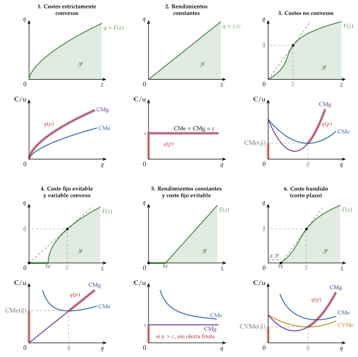
Fuente: elaboración propia a partir de Mas-Colell, Whinston y Green (1995, § 5.D).
G. Anexo: funciones de costes de las formas funcionales habituales
| Tecnología | Producción | Función de costes | CMe a largo plazo |
|---|---|---|---|
| Leontief | \(q=\min\{z_K/a;\,z_L/b\}\) | \(C=(a\,w_K+b\,w_L)\,q\) | constante |
| Lineal | \(q=a_Kz_K+a_Lz_L\) | \(C=q\,\min\{w_K/a_K;\,w_L/a_L\}\) | constante |
| Cobb-Douglas | \(q=A\,z_K^{\alpha}z_L^{\beta}\), \(k=\alpha+\beta\) | \(C=k\,(q/A)^{1/k}(w_K/\alpha)^{\alpha/k}(w_L/\beta)^{\beta/k}\) | según \(k\gtrless 1\) |
| CES | \(q=A\big[a_Kz_K^{\rho}+a_Lz_L^{\rho}\big]^{\nu/\rho}\), con \(\sigma=1/(1-\rho)\) |
\(C=(q/A)^{1/\nu}\big[a_K^{\sigma}w_K^{1-\sigma}+a_L^{\sigma}w_L^{1-\sigma}\big]^{1/(1-\sigma)}\) | según \(\nu\gtrless 1\) |
| Homotética | \(q=g\big(h(\vec{z})\big)\) | \(C=\phi(q)\,c(\vec{w})\) | según \(\phi\) |
| Translog de costes | — | ecuación (38) | U, L o monótono |
Fuente: elaboración propia a partir de Varian (1992, cap. 1 y 5) y Arrow et al. (1961).
H. Anexo: aspectos relevantes para el test
Preguntas tipo test: simulador de test.
Homogeneidad:
\(C\) es homogénea de grado uno en \(\vec{w}\) (no en \(q\));
\(\vec{z}(\vec{w},q)\), de grado cero en \(\vec{w}\) (no en \(q\));
\(B\), de grado uno, y \(\vec{z}(p,\vec{w})\) y \(q(p,\vec{w})\), de grado cero, en \((p,\vec{w})\).
El lema de Shephard no lleva signo menos; el de Hotelling, sí en las demandas de factores (\(z_i=-\partial B/\partial w_i\)) y no en la oferta (\(q=\partial B/\partial p\)).
\(C\) es cóncava en \(\vec{w}\); \(B\) es convexa en \((p,\vec{w})\). La matriz de sustitución \(S(\vec{w},q)\) es simétrica y semidefinida negativa: su diagonal es no positiva.
El multiplicador de la minimización del coste es el coste marginal: \(\mu^*=\partial C/\partial q=\mathrm{CMg}\).
\(\varepsilon_{C,q}<1\) son economías de escala (el coste crece menos que la producción); \(\varepsilon_{q,\lambda}>1\) son rendimientos crecientes. En la combinación de mínimo coste, \(\varepsilon_{q,\lambda}=1/\varepsilon_{C,q}\) para cualquier tecnología, no solo las homotéticas.
No hay factores Giffen en la empresa precio-aceptante; sí puede haber factores inferiores, y encarecerlos baja el coste marginal.
La envolvente de los CMe a corto plazo no pasa por sus mínimos salvo en el mínimo del CMe a largo (error de Viner).
A corto plazo no hay economías de escala: la U del CMe a corto se debe a la ley de proporciones variables; la del CMe a largo, a los rendimientos a escala variables.
Monopolio natural:
se define por la subaditividad;
las economías de escala son suficientes, no necesarias;
las de alcance, necesarias, no suficientes, con varios productos.
Farrell: eficiencia económica = técnica \(\times\) asignativa. DEA: no paramétrico, sin ruido; frontera estocástica: paramétrico, separa ruido e ineficiencia.
Bibliografía
El individualismo metodológico sostiene que los fenómenos sociales (su estructura y sus cambios) se explican, en principio, a partir de los individuos: sus objetivos, sus creencias y sus acciones. La evolución de la sociedad se entiende como el agregado de las decisiones de los particulares; es, en ese sentido, un método reduccionista, que explica las grandes entidades por referencia a las más pequeñas.↩︎
La separación estricta entre consumidores y productores es una simplificación, como advierten Ekelund y Hébert (2014). La desdibujan las «tecnologías del consumo», que aplican la teoría de la producción a las decisiones del consumidor: el enfoque de características de Lancaster (1966), la asignación del tiempo y la producción doméstica de Becker (1965) y Gronau (1977), o la economía de la información de Stigler (1961), en la que la información sobre los bienes es costosa y obliga a un proceso de búsqueda que se combina con el bien físico.↩︎
Un proceso es técnicamente eficiente si no hay otro que obtenga la misma producción con menos de algún factor (y no más de ninguno) o más producción con los mismos factores.↩︎
Es un supuesto instrumental: exige que los factores sean sustituibles de forma continua, que haya infinitas técnicas y que el producto sea perfectamente divisible.↩︎
Como la convexidad estricta de las preferencias en el consumidor [ver tema 3.A.8]. Si dos factores son en cierto grado complementarios, con poco de uno se produce poco aunque el otro abunde, y la media de dos combinaciones extremas produce más que al menos una de ellas (Jehle y Reny, 2011, cap. 3). En la Cobb-Douglas \(q=A\,z_K^{\alpha}z_L^{\beta}\), la productividad marginal del capital aumenta con el trabajo, \(\partial^2F/\partial z_K\partial z_L=\alpha\beta\,q/(z_Kz_L)>0\), y disminuye con el propio capital si \(\alpha<1\).↩︎
Con rendimientos decrecientes y cierto grado de complementariedad entre los factores, la función de producción es estrictamente cóncava. Es un supuesto cómodo para el análisis, porque garantiza que el problema del beneficio de la empresa precio-aceptante esté acotado. Aun así, en la teoría de la distribución y en la del crecimiento es habitual suponer rendimientos constantes a escala [ver tema 3.A.11]: entonces el beneficio máximo es nulo y se trabaja con la función de costes.↩︎
Cuánto se separa la función de costes de su plano tangente depende del grado de sustituibilidad entre los factores, que mide la elasticidad de sustitución [ver tema 3.A.11]: cuanto mayor es, más se ahorra al reoptimizar. Con proporciones fijas (Leontief) no hay sustitución posible y la función de costes es lineal en \(\vec{w}\).↩︎
Todos los elementos de la diagonal principal de una matriz semidefinida negativa son no positivos (nulos o negativos), y en \(S(\vec{w},q)\) esos elementos son los efectos precio propios de las demandas condicionadas, \(\partial z_i(\vec{w},q)/\partial w_i\). El recíproco no es cierto: una diagonal no positiva no basta para que la matriz sea semidefinida negativa (anexo C).↩︎
En general, \(p\leq\mathrm{CMg}\), con igualdad si \(q>0\).↩︎
La senda de expansión de una función homotética es, por tanto, una recta de pendiente positiva desde el origen, y los dos factores son normales: al aumentar la producción se usa más de ambos en la misma proporción.↩︎
En el gráfico 9, entre \(B\) y \(C\) la senda se vuelve hacia la izquierda: por encima de cierto nivel de producción se elige menos trabajo, que es inferior en ese tramo. Si la senda se doblara en el sentido opuesto, hacia abajo, el factor inferior sería el capital.↩︎
El CMe decrece mientras el rayo desde el origen hasta la curva de costes totales se vuelve más plano, alcanza su mínimo en la producción en la que ese rayo es tangente a la curva (allí \(\mathrm{CMe}=\mathrm{CMg}\)) y crece a partir de ese punto.↩︎
El CMg decrece en el tramo en que la curva de costes totales es cóncava (su pendiente disminuye al aumentar la producción) y crece donde es convexa; su mínimo está en el punto de inflexión de la curva de costes totales.↩︎
La idea de que una misma empresa puede pasar, al crecer, por los tres tipos de rendimientos a escala (crecientes al principio, constantes en un punto y decrecientes después) la desarrolla Wicksell (1901): la empresa tiende a un tamaño óptimo, en el paso de los rendimientos crecientes a los decrecientes, donde se comporta como si los tuviera constantes; si las empresas son bastantes para competir, la libre entrada lleva el beneficio a cero y la remuneración de los factores según su productividad marginal agota el producto aunque la función de producción no sea homogénea (Wicksell, 1934, 1:126-31; Humphrey, 1997, 73-74). La misma idea está en Barone y en Walras.↩︎
Como \(\mathrm{CMe}=C(\vec{w},q)/q\) y \(q\) no cambia, \(\varepsilon_{\mathrm{CMe},w_i}=\dfrac{\partial\,\mathrm{CMe}}{\partial w_i}\,\dfrac{w_i}{\mathrm{CMe}}=\dfrac{z_i(\vec{w},q)}{q}\,\dfrac{w_i\,q}{C(\vec{w},q)}=\dfrac{w_i\,z_i(\vec{w},q)}{C(\vec{w},q)}=s_i\). Las curvas de coste total y de coste medio se desplazan hacia arriba en una cuantía que depende del peso del factor en el coste; no lo hacen en la misma proporción para todo \(q\), porque \(s_i\) puede variar con la producción.↩︎
En la producción en la que el coste total a corto plazo es tangente al coste total a largo plazo, la curva de coste medio a corto plazo es tangente a la de coste medio a largo plazo y, además, la curva de coste marginal a corto plazo corta a la de coste marginal a largo plazo: si dos curvas de coste total son tangentes en \(q\), tienen allí el mismo valor (y, al dividir por \(q\), el mismo coste medio) y la misma pendiente (el mismo coste marginal). En el detalle ampliado de \(q_1\), el CMg a corto plazo tiene allí más pendiente que el de largo (lo corta desde abajo).
↩︎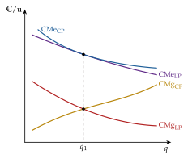
Paul Samuelson es especialmente conocido por el planteamiento general del método de la estática comparativa en sus Fundamentos del análisis económico (1947), con el que generalizó la aplicación de modelos matemáticos a la economía. El método estudia cómo cambia la solución de un problema de maximización cuando cambia un parámetro, y el principio de Le Chatelier es uno de sus resultados: compara esa respuesta con y sin una restricción adicional. Según el propio Samuelson, la clave para formular el principio se la dieron las clases de termodinámica de su profesor en Harvard, Edwin Bidwell Wilson, último discípulo de Willard Gibbs en Yale: que la respuesta de un sistema en equilibrio es menos un teorema de física que un teorema matemático sobre formas cuadráticas definidas negativas (Samuelson, 1970, 67-68; Backhouse, 2015, 331-33). Recibió el Premio Nobel de Economía de 1970 «por la labor científica con la que ha desarrollado la teoría económica estática y dinámica y ha contribuido activamente a elevar el nivel del análisis en la ciencia económica» (The Nobel Prize, 1970).↩︎
En las figuras 5.D.4 y 5.D.5 de Mas-Colell, Whinston y Green (1995) el coste fijo es evitable (no hundido), porque la inacción es posible: si la empresa no produce, no lo paga. Si la inacción no fuera posible, el coste fijo sería hundido y se pagaría aunque no se produjera, que es el caso de su figura 5.D.6 y del caso 6.↩︎